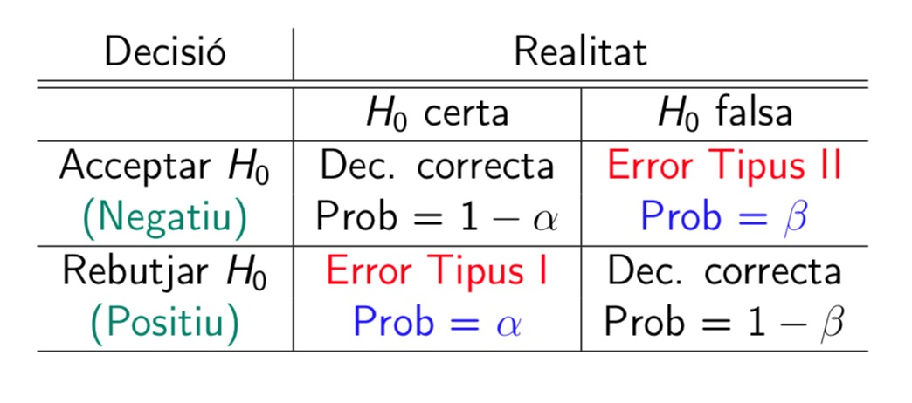
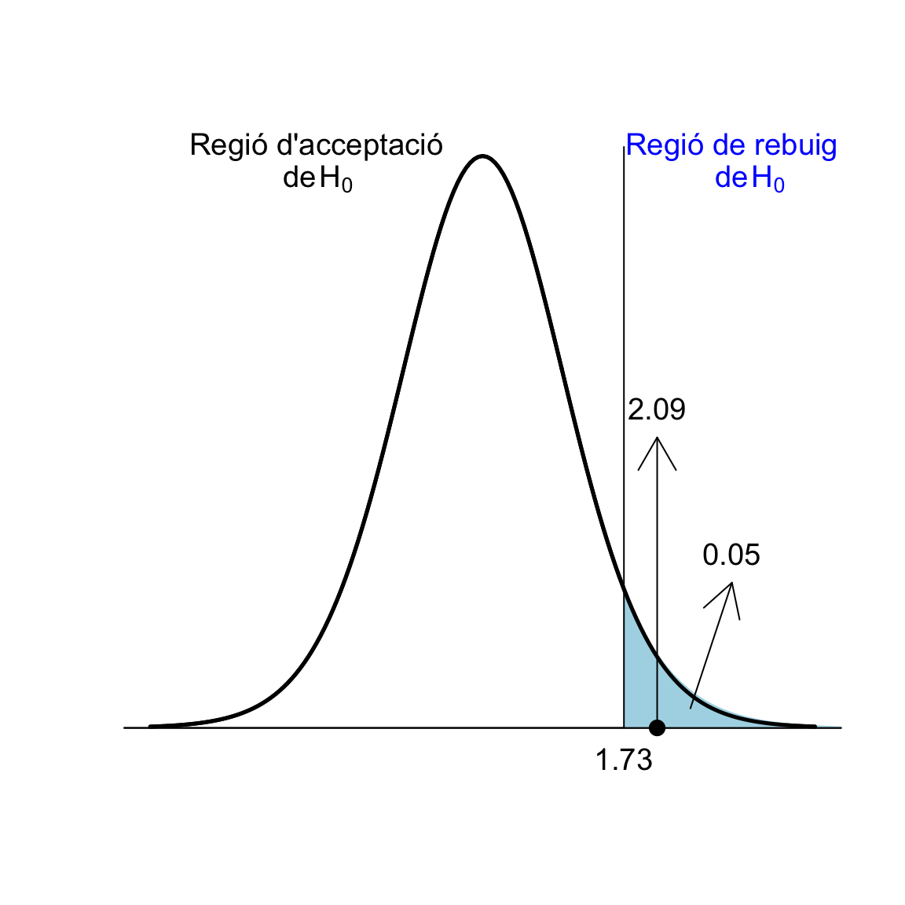

Tema 5 Contrastos d’hipòtesis: Generalitats
En moltes situacions, hem de prendre una decisió sobre si es pot acceptar o rebutjar una hipòtesi relativa al valor d’un paràmetre d’una població o diverses poblacions. Per prendre aquesta decisió, prenem una mostra de la població i hi mesuram qualque cosa. Per exemple:
Volem saber si una moneda està trucada a favor de cara. Per decidir-ho, la llançam una sèrie de vegades, i comptam quantes cares surten.
Volem decidir si un tractament nou A és més efectiu que el tractament vell B en la curació d’una malaltia X. Per decidir-ho, portam a terme un assaig clínic, tractant amb A un grup de malalts i amb B un altre grup de malalts, i comparam la taxa de curació dels tractaments sobre aquests dos grups.
El mètode estadístic que s’empra per acceptar o rebutjar una hipòtesi rep el nom de contrast d’hipòtesis.
5.1 Les hipòtesis nul·la i alternativa
En un contrast d’hipòtesis, es comparen sempre dues hipòtesis alternatives: la hipòtesi nul·la H0 i la hipòtesi alternativa H1. Se sol plantejar formalment \[ \left\{\begin{array}{ll} H_{0}:\text{hipòtesi nul·la}\\ H_{1}:\text{hipòtesi alternativa} \end{array} \right. \]
Típicament, la hipòtesi nul·la H0 és “no hi ha diferència”, “no passa res”, “no hi ha res d’estrany” o l’equivalent en el context del contrast:
La moneda és equilibrada (50% de probabilitat de cara)
Els tractaments A i B són igual d’efectius en la curació de la malaltia X
La hipòtesi alternativa H1 planteja la diferència de la qual cercam evidència:
La moneda està trucada a favor de cara (més del 50% de probabilitat de cara)
A és més efectiu que B en la curació de la malaltia X
Per defecte, estam disposats a acceptar H0: que no hi ha diferència, que no passa res.
Per defecte, estam disposats a acceptar que la moneda és equilibrada (la majoria ho són, no?)
Per defecte, estam disposats a acceptar que els dos tractaments són igual d’efectius (en general, si preneu dos tractaments qualssevol, a l’atzar, i els aplicau a malalts de X, els dos seran igual de (in)efectius)
Si obtenim evidència suficient que H0 és falsa, rebutjarem H0 a favor de H1 i conclourem que H1 és vertadera.
Què vol dir “obtenir evidència suficient que H0 és falsa”? Doncs que les dades obtengudes fan que H0 sigui inversemblant (mala de creure) per comparació amb H1:
Tendrem evidència que la moneda està trucada a favor de cara si a la nostra sèrie de llançaments la proporció de cares és tan i tan gran que fa mal de creure que la probabilitat de cara sigui del 50%
Tendrem evidència que el tractament A és més efectiu que B en la curació de la malaltia X si en el nostre assaig la taxa de curació de la malaltia X amb el tractament A és tan i tan més gran que la de B que fa mal de creure que els dos tractaments siguin igual d’efectius
Si no obtenim evidència suficient que H0 és falsa, és a dir, si les nostres dades són raonablement compatibles amb H0, no podrem rebutjar-la. En aquest cas direm que acceptam la hipòtesi nul·la com a sinònim de no rebutjam la hipòtesi nul·la.
Acceptarem que la moneda no està trucada a favor de cara si a la nostra sèrie de llançaments la proporció de cares no és prou gran com per fer mal de creure que sigui equilibrada
Acceptarem que el tractament A és igual d’efectiu que B en la curació de la malaltia X si en el nostre assaig la taxa de curació de la malaltia X amb el tractament A no és prou més gran que la de B com per fer mal de creure que els dos tractaments siguin igual d’efectius
Per exemple, si en una seqüència de 30 llançaments d’una moneda obtenim totes les vegades cara, segurament ho considerarem evidència que la moneda està trucada, però no demostrarà que la moneda estigui trucada. Sí, farà mal de creure que sigui equilibrada, però no és impossible: la moneda podria ser equilibrada i per pur atzar nosaltres haver tengut aquesta ratxa de cares. Feu els comptes. La probabilitat de treure 30 cares en 30 llançaments d’una moneda equilibrada és 0.530=9.3· 10-10. Per tant, de mitjana, aproximadament en un de cada mil milions de pics que s’efectuen 30 llançaments seguits d’una moneda equilibrada, s’obtenen 30 cares. Al món hi ha actualment més de 7700 milions de persones. És a dir que, si tots ens posàssim d’acord i llançàssim una moneda equilibrada 30 vegades, esperaríem que entre 7 i 8 treguessin 30 cares.
I tampoc podem dir que sigui improbable que la moneda sigui equilibrada, ja que nosaltres sabem calcular \[ P(\text{30 cares en 30 llançaments}\mid \text{La moneda és equilibrada}) \] però no sabem calcular \[ P(\text{La moneda és equilibrada}\mid\text{30 cares en 30 llançaments}). \]
Per exemple, si en una seqüència de 4 llançaments d’una moneda obtenim 2 cares, no tendrem motiu per dubtar que la probabilitat de cara sigui 0.5: no podrem rebutjar que aquesta probabilitat sigui 0.5. Però tampoc no tendrem motiu per dubtar que la probabilitat de cara sigui, jo què sé, 0.5001: no podrem rebutjar que aquesta probabilitat sigui 0.5001. Però el que no pot ser és que diguem que hem obtingut evidència que la probabilitat de cara és 0.5 i que hem obtingut evidència que la probabilitat de cara és 0.5001. No es pot obtenir evidència simultàniament de dues coses que s’excloguin una a l’altra.
La millor manera de no entendre malament el resultat d’un contrast d’hipòtesis és sempre redactar la conclusió en la forma
- Hem trobat evidència de la hipotesi alternativa
- No hem trobat evidència de la hipotesi alternativa
segons quin sigui el cas.
Exemple 5.1 En un judici (on l’acusat és innocent si no es demostra el contrari, i per tant estam disposats a acceptar per defecte que és innocent), se cerca evidència que l’acusat és culpable, per tant aquesta és la hipòtesi alternativa:
El contrast és \[ \left\{\begin{array}{ll} H_{0}:\text{L'acusat és innocent}\\ H_{1}:\text{L'acusat és culpable} \end{array} \right. \]
S’aporten proves
Si el jurat les troba prou incriminatòries, “més enllà de tot dubte raonable”, declara culpable l’acusat (rebutja H0 en favor de H1)
Si el jurat no les troba prou incriminatòries, el considera no culpable (no rebutja H0)
Fixau-vos que considerar no culpable no és el mateix que demostrar que és innocent: pot ser que es consideri que l’acusat no és culpable simplement perquè no s’hagi trobat prou evidència per declarar-lo culpable.
Exemple 5.2 Un examen és un contrast d’hipòtesis. En aquest cas, “no passa res” significa que l’estudiant és com si no hagués anat al curs, no ha après res, i per tant aquesta és la hipòtesi nul·la. Amb l’examen cercam evidència que l’estudiant ha après la matèria, per tant aquesta serà la hipòtesi alternativa:
El contrast és: \[ \left\{\begin{array}{ll} H_{0}:\text{L'estudiant no sap la matèria}\\ H_{1}:\text{L'estudiant sap la matèria} \end{array} \right. \]
Prenem una mostra del coneixement de l’estudiant (l’estudiant fa l’examen)
Si hi ha prou evidència a favor de H1 (si l’examen li surt prou bé), rebutjam H0: decidim que l’estudiant sap la matèria, aprova l’assignatura
Si no hi ha prou evidència a favor de H1 (si l’examen no li surt prou bé), ens quedam amb H0: concloem que l’estudiant no ha après la matèria, suspèn l’assignatura
Exemple 5.3 Ens trobam amb la notícia següent al diari, i ens demanam si les dones practiquen realment menys esport que els homes.

Aquesta pregunta la podem plantejar de moltes maneres:
Totes les dones fan cada dia menys hores d’esport que tots els homes?
Si prenc una dona i un home a l’atzar, hi ha més d’un 50% de probabilitat que ella practiqui menys esport que ell?
La majoria de les dones fan cada dia menys hores d’esport que la majoria dels homes?
La proporció de practicants d’esport entre les dones és més petita que entre els homes?
La mitjana setmanal de vegades que les dones practiquen esport és més petita que la dels homes?
La mitjana setmanal d’hores que les dones practiquen esport és més petita que la dels homes?
…
Cada una d’aquestes preguntes es traduiria en un contrast d’hipòtesis diferent. Com que aquí estam tractant contrastos sobre paràmetres poblacionals (mitjanes, proporcions, etc.), podríem plantejar algun dels quatre darrers. Anem a centrar-nos en la darrera qüestió, sobre mitjanes setmanals d’hores d’esport.
Aquí, les variables poblacionals d’interès són:
\(X_d\): “Prenc una dona i anot el seu nombre mitjà d’hores setmanals d’esport”, amb mitjana \(\mu_d\): la mitjana d’hores setmanals d’esport de les dones (la mitjana de les mitjanes d’hores setmanals d’esport de totes les dones és la mitjana d’hores setmanals d’esport de les dones).
\(X_h\): “Prenc un home i anot el seu nombre mitjà d’hores setmanals d’esport”, amb mitjana \(\mu_h\): la mitjana d’hores setmanals d’esport dels homes
El contrast que volem realitzar és
Hipòtesi nul·la: no hi ha diferència entre les mitjanes d’hores setmanals d’esport d’homes i dones
Hipòtesi alternativa: la mitjana d’hores setmanals d’esport de les dones és més petita que la dels homes
És a dir \[ \left\{\begin{array}{ll} H_{0}: \mu_d=\mu_h\\ H_{1}:\mu_d<\mu_h \end{array} \right. \]
El procediment per realitzar-lo serà:
Prenem mostres aleatòries de dones i d’homes i els demanam pels seus hàbits de pràctica d’esport
Calculam la mitjana mostral \(\overline{X}_d\) d’hores setmanals d’esport de les dones de la mostra
Calculam la mitjana mostral \(\overline{X}_h\) d’hores setmanals d’esport dels homes de la mostra
Si \(\overline{X}_d\) és molt més petita que \(\overline{X}_h\), ho prendrem com a evidència que \(\mu_d<\mu_h\)
Si \(\overline{X}_d\) no és molt més petita que \(\overline{X}_h\), no haurem trobat evidència que \(\mu_d<\mu_h\) i per tant acceptarem que \(\mu_d=\mu_h\)
Què significa “\(\overline{X}_d\) molt més petita que \(\overline{X}_h\)”? Una opció, que podríem importar del tema anterior, seria calcular un interval de confiança del 95% per a \(\mu_d-\mu_h\) a partir de la mostra:
Si estigués totalment a l’esquerra del 0, amb un 95% de confiança podríem concloure que \(\mu_d<\mu_h\) (perquè tendríem un 95% de seguretat que el valor real de la diferència \(\mu_d-\mu_h\) pertany a un interval de nombres estrictament negatius).
En cas contrari, és a dir, si contengués el 0 o si estigués totalment a la dreta del 0, amb un 95% de confiança no podríem concloure que \(\mu_d<\mu_h\) (perquè l’interval on estam molt segurs que cau el valor real de la diferència \(\mu_d-\mu_h\) contendria valors \(\geqslant 0\) i per tant podria ser, dins el nostre marge de seguretat, que \(\mu_d-\mu_h\geqslant 0\)).
Com que aquí voldrem filar més prim que això del “nivell de confiança”, el procediment serà una mica més complicat (bàsicament, emprarem diferents fórmules per calcular els intervals de confiança segons la forma que tengui la hipòtesi alternativa).
Abans de tancar aquesta secció, volem emfatitzar algunes advertències.
A l’exemple anterior les hipòtesis del contrast comparaven les mitjanes poblacionals d’hores setmanals d’esport de les dones i els homes, no les mitjanes mostrals d’hores setmanals d’esport de les dones i els homes de la nostra mostra.
Per comparar les mitjanes mostrals no ens fa falta un contrast d’hipòtesis: les calculam i punt. En canvi, com que no podem calcular les mitjanes d’hores setmanals d’esport de totes les dones i de tots els homes, ens veiem obligats a emprar estadística i fer un contrast d’hipòtesis.
Si no podem concloure que les dones practiquin menys esport que els homes (perquè no hàgim trobat evidència a favor d’aquesta hipòtesi), això no significarà que hàgim trobat evidència que els homes i les dones practiquin la mateixa quantitat d’esport o que les dones en practiquin més. Simplement, significarà que l’evidència a favor de H1 no ha estat prou forta com per poder afirmar que és vertadera i per tant acceptam que tothom practica la mateixa quantitat d’esport.
Si per exemple al nostre estudi haguéssim trobat que \(\overline{X}_d=\overline{X}_h\), això seria compatible amb la hipòtesi nul·la \(\mu_d=\mu_h\), naturalment, i per això no la podríem rebutjar. Però no podem dir que aporti evidència que \(\mu_d=\mu_h\), perquè \(\overline{X}_d=\overline{X}_h\) segurament també seria compatible, per exemple, amb \(\mu_d=\mu_h+0.0007\) (les dones fan, de mitjana, un minut més d’esport a la setmana que els homes), per tant tampoc no podríem rebutjar com a hipòtesi nul·la que \(\mu_d=\mu_h+0.0007\). I el que no podem dir és que un mateix conjunt de dades aporti simultàniament evidència que \(\mu_d=\mu_h\) i que \(\mu_d=\mu_h+0.0007\).
La pregunta la plantejam abans d’obtenir la mostra. Si estam interessats en el contrast \[ \left\{\begin{array}{ll} H_{0}: \mu_d=\mu_h\\ H_{1}:\mu_d<\mu_h \end{array} \right. \] i obtenim que \(\overline{X}_d\) és molt més gran que \(\overline{X}_h\) en la nostra mostra, concloem que no tenim evidència que \(\mu_d<\mu_h\) i punt. És fer trampes dir: “No hem trobat evidència que les dones practiquin menys esport que els homes, però si amb aquestes mateixes dades realitzam el contrast \[ \left\{\begin{array}{ll} H_{0}: \mu_d=\mu_h\\ H_{1}:\mu_d>\mu_h \end{array} \right. \] sí que obtenim evidència que elles practiquen més esport que ells.”
D’això se’n diu “anar a pescar” o també “torturar les dades”: obtenir unes dades i cercar de què donen evidència. És mala praxis científica. Qualsevol conjunt de dades, si el torturam prou, acaba donant evidència de qualque cosa.
No confongueu \[ \left\{\begin{array}{ll} H_{0}: \mu_d=\mu_h\\ H_{1}:\mu_d<\mu_h \end{array} \right. \] amb \[ \left\{\begin{array}{ll} H_{0}: \mu_d=\mu_h\\ H_{1}:\mu_d\neq \mu_h \end{array} \right. \] que tradueix la pregunta "Els homes i les dones, de mitjana, practiquen esport un nombre diferent d’hores a la setmana?’’
Regles per triar H0 i H1 en aquest curs:
H0 sempre ha de significar “no hi ha diferència” i s’ha de definir formalment mitjançant una igualtat
H1 és la hipòtesi de la que cercam evidència, i s’ha de definir formalment mitjançant alguna cosa “estricta”:
Hipòtesi unilateral (one-sided; també d’una cua, one-tailed): definida amb < o amb >
Hipòtesi bilateral (two-sided; també de dues cues, two-tailed): definida amb \(\neq\)
Els contrastos prenen el nom del tipus d’hipòtesi alternativa: contrast unilateral, de dues cues, etc.
5.2 Un exemple
Tenc una moneda, i crec que està trucada a favor de cara. Vull contrastar-ho.
Aquí la variable aleatòria \(X\) que ens interessa és “Llanç la moneda i anot 1 si surt cara”, que és de Bernoulli amb probabilitat d’èxit (és a dir, probabilitat de treure cara amb la meva moneda) \(p_{\mathit{Cara}}\).
La hipòtesi nul·la serà que la moneda no està trucada (no li passa res a la meva moneda), i l’alternativa (de la que cerc evidència) que la moneda està trucada a favor de cara. En termes de \(p_{\mathit{Cara}}\), el contrast és \[ \left\{\begin{array}{ll} H_{0}:p_{\mathit{Cara}}= 0.5\\ H_{1}:p_{\mathit{Cara}}> 0.5 \end{array} \right. \]
Exemple 5.4 Suposem que llanç la moneda 3 vegades i obtenc 3 cares. És evidència suficient que està trucada?
Diguem \(S_3\) a la variable aleatòria “Nombre de cares en 3 llançaments d’aquesta moneda.”
Si la moneda no està trucada, \(S_3\) és binomial B(3,0.5) i per tant \[ P(S_3=3)=0.5^{3}=0.125 \]
El resultat obtengut no és molt improbable amb una moneda equilibrada: passaria en 1 de cada 8 seqüències de 3 llançaments. Per tant, no és evidència suficient que estigui trucada. No podem rebutjar que sigui equilibrada.
Exemple 5.5 Suposem que ara llanç la moneda 10 vegades i obtenc 10 cares. És evidència suficient que està trucada?
Diguem ara \(S_{10}\) a la variable aleatòria “Nombre de cares en 10 llançaments.”
Si la moneda no està trucada, \(S_{10}\) és B(10,0.5) i per tant \[ P(S_{10}=10)=0.5^{10}=0.001 \]
El resultat obtengut és molt improbable si la moneda no està trucada: si la moneda fos equilibrada, només en 1 de cada 1000 seqüències de 10 llançaments obtendríem 10 cares. És a dir:
El resultat del nostre experiment seria molt estrany si la moneda fos equilibrada, per tant és inversemblant que sigui equilibrada.
Ho consideram evidència que està trucada.
Fixau-vos en el raonament. Tenim la hipòtesi nul·la i realitzam un experiment per a contrastar-la. Si obtenim un resultat que sembla que la contradiu, una de dues:
- O la hipòtesi nul·la és falsa.
- O la hipòtesi nul·la és vertadera i ha passat una cosa molt rara.
Què és el més assenyat concloure? Tenint en compte que les coses molt rares no solen passar, el més assenyat és concloure que la hipòtesi nul·la és falsa.
Fixau-vos en el procediment:
Hem plantejat el contrast: \[ \left\{\begin{array}{ll} H_{0}:p_{\mathit{Cara}}= 0.5\\ H_{1}:p_{\mathit{Cara}}> 0.5 \end{array} \right. \]
Hem recollit una mostra aleatòria: la seqüència de llançaments
Hem triat un estadístic de contrast amb distribució mostral coneguda quan H0 és vertadera: al nostre cas, el nombre de cares
Hem calculat el valor d’aquest estadístic sobre la nostra mostra
Hem calculat la probabilitat que l’estadístic prengui el valor observat si H0 és vertadera
Si aquesta probabilitat és molt petita, ho consideram evidència que H1 és vertadera
Si no és prou petita, no podem rebutjar que H0 sigui la vertadera
Bé, això és el que hem fet, però no és del tot correcte. Als punts (5) i (6) diem que: “Calculam la probabilitat que l’estadístic prengui el valor observat si H0 és vertadera; si és molt petita, ho consideram evidència que H1 és vertadera.” Segur que això està bé?
Suposem que, al contrast anterior, llançam la moneda 10 vegades i ara obtenim 10 creus. És evidència suficient que està trucada a favor de cara? Òbviament no ho pot ser, però la probabilitat que passi si H0 és vertadera és la mateixa que abans: \[ P(S_{10}=0)=0.5^{10}=0.001 \]
En molts casos, la probabilitat d’obtenir exactament el que hem obtengut pot ser molt petita, independentment del que hàgim obtengut. Per exemple, suposem que llançam la moneda 10000 vegades i obtenim 5000 cares. Si la moneda és equilibrada, el nombre de cares seguirà una distribució binomial B(10000,0.5) i la probabilitat d’obtenir 5000 cares serà
dbinom(5000,10000,0.5)=0.008, ben petita, però clarament si la meitat de llançaments donen cara, no podem tenir mai evidència que la moneda estigui trucada.O, encara més exagerat, si l’estadístic de contrast té distribució contínua, la probabilitat que prengui un valor concret és 0. Més petit impossible, però no sempre rebutjarem la hipòtesi nu·la.

Figura 5.1: “Null hypothesis” (https://xkcd.com/892/ (CC-BI-NC 2.5))
Així que:
Al nostre exemple de la moneda, com que la hipòtesi nul·la és \(p_{\mathit{Cara}}= 0.5\) i la hipòtesi alternativa és \(p_{\mathit{Cara}}> 0.5\), el p-valor és la probabilitat que, si \(p_{\mathit{Cara}}= 0.5\), el nombre de cares sigui més gran o igual que l’obtengut a la nostra mostra.
En els dos exemples anteriors concrets, on obteníem 3 cares en 3 llançaments i 10 cares en 10 llançaments, és el mateix demanar que el nombre de cares sigui igual a l’obtengut i demanar que el nombre de cares sigui més gran o igual que l’obtengut, perquè en els dos experiments hem obtengut el nombre màxim possible de cares; per exemple, treure 3 o més cares en 3 llançaments és exactament el mateix que treure 3 cares en 3 llançaments. Però en general aquest no serà el cas.
Exemple 5.6 Tornem al nostre contrast \[ \left\{\begin{array}{ll} H_{0}:p_{\mathit{Cara}}= 0.5\\ H_{1}:p_{\mathit{Cara}}> 0.5 \end{array} \right. \] Suposem que llanç la moneda 10 vegades i obtenc 7 cares. És evidència suficient que està trucada?
Seguim dient \(S_{10}\) a la variable aleatòria “Nombre de cares en 10 llançaments”, que, si la moneda no està trucada, és B(10,0.5).
Com que la hipòtesi alternativa és \(p_{\mathit{Cara}}> 0.5\), “obtenir un nombre de cares tan extrem o més que el que hem obtengut en el sentit de la hipòtesi alternativa” és treure tantes cares com les que hem obtengut o més, és a dir treure 7 o més cares.
Per tant
\[
\text{p-valor}=P(S_{10}\geqslant 7)=\texttt{1-pbinom(6,10,0.5)}=0.172
\]
Un resultat tan extrem o més que l’obtengut no és molt improbable si la moneda no està trucada: passaria al voltant d’1 de cada 6 ocasions. Per tant, com que és bastant compatible amb el fet que la moneda sigui equilibrada, no ho podem considerar evidència que estigui trucada a favor de cara.
Exemple 5.7 Tenc una moneda, i ara crec que està trucada a favor de creu. Vull contrastar-ho. Plantejat en termes de \(p_{\mathit{Cara}}\), el contrast que vull realitzar és \[ \left\{\begin{array}{ll} H_{0}:p_{\mathit{Cara}}= 0.5\\ H_{1}: p_{\mathit{Cara}}< 0.5 \end{array} \right. \] Suposem que llanç la moneda 10 vegades i obtenc 1 cara. És evidència suficient que \(p_{\mathit{Cara}}< 0.5\)?
Seguim dient \(S_{10}\) a la variable aleatòria “Nombre de cares en 10 llançaments d’aquesta moneda”, que, si H0 és vertadera, és B(10,0.5).
Ara, com que H1 és \(p_{\mathit{Cara}}< 0.5\), “obtenir un nombre de cares tan extrem o més que el que hem obtengut en el sentit de la hipòtesi alternativa” és treure tantes cares com les que hem obtengut o menys, és a dir treure 1 cara o cap. Per tant \[ \text{p-valor}=P(S_{10}\leqslant 1)=\texttt{pbinom(1,10,0.5)}=0.01 \] Un resultat tan extrem o més que l’obtengut és bastant improbable si \(p_{\mathit{Cara}}= 0.5\): passaria en 1 de cada 100 seqüències de 10 llançaments. Ho podem considerar evidència que la moneda està trucada a favor de creu.
5.3 El p-valor
El p-valor d’un contrast és la probabilitat que, si la hipòtesi nul·la és vertadera, l’estadístic de contrast prengui en una mostra aleatòria simple de la mateixa mida que la nostra un valor tan o més extrem, en el sentit de la hipòtesi alternativa, que l’obtengut amb la nostra mostra.
Ho tornarem a repetir, posant èmfasi en els components fonamentals de la definició. El p-valor és:
- La probabilitat que,
- si la hipòtesi nul·la és vertadera,
- l’estadístic de contrast prengui en una mostra aleatòria simple de la mateixa mida que la nostra
- un valor tan o més extrem, en el sentit de la hipòtesi alternativa,
- que l’obtengut amb la nostra mostra.
Exemple 5.8 Suposem que al contrast de les mitjanes d’hores setmanals d’esport d’homes i dones de l’Exemple 5.3 hi empram com a estadístic de contrast la diferència entre les mitjanes mostrals \(\overline{X}_d-\overline{X}_h\) (que no serà el cas: només és com a exemple!) i que hem pres mostres de 50 dones i de 50 homes, i que la diferència de mitjanes mostrals ha estat -1.2. Aleshores, el p-valor del contrast és
La probabilitat que,
si la hipòtesi nul·la és vertadera,
si \(\mu_d=\mu_h\), és a dir, si els homes i les dones practiquen de mitjana el mateix nombre d’hores d’esport a la setmana,
l’estadístic de contrast prengui en una mostra aleatòria simple de la mateixa mida que la nostra
el valor de \(\overline{X}_d-\overline{X}_h\), és a dir, de la mitjana mostral d’hores setmanals d’esport en les dones menys la mitjana mostral d’hores setmanals d’esport en els homes, d’una mostra aleatòria formada per 50 dones i 50 homes, sigui
un valor tan o més extrem, en el sentit de la hipòtesi alternativa,
més petit o igual (perquè la hipòtesi alternativa és \(\mu_d<\mu_h\), és a dir \(\mu_d-\mu_h<0\))
que l’obtengut amb la nostra mostra.
que el de la nostra mostra, -1.2
En resum, el p-valor seria en aquest cas
La probabilitat, si \(\mu_d=\mu_h\), que, si prenem una mostra aleatòria de 50 dones i 50 homes, el valor de \(\overline{X}_d-\overline{X}_h\) que obtenguem sigui més petit o igual que -1.2: \[ P(\overline{X}_d-\overline{X}_h\leqslant -1.2\mid \mu_d=\mu_h) \]
Si aquesta probabilitat és molt petita, la mostra obtenguda és poc consistent amb la hipòtesi nul·la i per tant conclourem que la hipòtesi alternativa és vertadera. Si, en canvi, aquesta probabilitat no és molt petita, la mostra obtenguda és consistent amb la hipòtesi nul·la i per tant no podrem rebutjar que H0 sigui vertadera.
El p-valor no és:
La probabilitat que H0 sigui vertadera condicionada al nostre resultat
La probabilitat que H1 sigui falsa condicionada al nostre resultat
És a l’inrevés: El p-valor és la probabilitat del nostre resultat (o quelcom més extrem en el sentit del qual cercam evidència) condicionada al fet que H0 sigui vertadera. Per tant, el p-valor és una evidencia indirecta inversa de H1:
Com més petit sigui el p-valor, més rar seria el que hem obtengut si H0 fos vertadera i H1 falsa, i per tant més evidència tenim que H0 no pot ser vertadera i que la vertadera és H1.
Per exemple, que el p-valor d’un contrast doni 0.03
Significa que, si H0 és vertadera, la probabilitat que l’estadístic de contrast prengui sobre una mostra un valor tan extrem o més que el que hem obtengut és 0.03
La trobau petita? Ho preneu com a evidència que H0 és falsa i H1 vertadera
No la trobau petita? No teniu evidència per rebutjar que H0 sigui vertadera
No significa que:
La probabilitat que H0 sigui vertadera és 0.03
H0 és vertadera un 3% de les vegades
Exemple 5.9 Tenc una moneda i vull saber si està trucada; a favor de cara o a favor de creu, m’és igual, només vull saber si està trucada. Ho decidiré amb un contrast.
Plantejat en termes de la probabilitat de treure cara \(p_{\mathit{Cara}}\), el contrast que vull realitzar ara és \[ \left\{\begin{array}{ll} H_{0}:p_{\mathit{Cara}}= 0.5\\ H_{1}:p_{\mathit{Cara}}\neq 0.5 \end{array} \right. \] Suposem que la llanç 10 vegades i obtenc 8 cares. És evidència suficient que està trucada?
Com a la secció anterior, diguem \(S_{10}\) a la variable “Nombre de cares en 10 llançaments”. Si \(p_{\mathit{Cara}}= 0.5\), \(S_{10}\) és B(10,0.5).
Si la hipòtesi nul·la fos vertadera, esperaríem treure 5 cares i 5 creus. Com que la hipòtesi alternativa és \(H_{1}:p_{\mathit{Cara}}\neq 0.5\), ara “obtenir un resultat tan o més extrem, en el sentit de la hipòtesi alternativa, que l’obtengut” és treure un resultat tant o més diferent de 5 cares i 5 creus que l’obtengut: és a dir, treure almenys 8 cares o almenys 8 creus, o el que és el mateix, treure com a mínim 8 cares o com a màxim 2 cares. Per tant, el p-valor és \[ \begin{array}{l} P(S_{10}\geqslant 8\text{ o }S_{10}\leqslant 2) =P(S_{10}\geqslant 8) + P(S_{10}\leqslant 2)\\ \qquad =1-P(S_{10}\leqslant 7) + P(S_{10}\leqslant 2)\\ \qquad =\texttt{1-pbinom(7,10,0.5)+pbinom(2,10,0.5)}\\ \qquad =0.11 \end{array} \]
Per tant, si la moneda no està trucada, un resultat com l’obtengut o més llunyà de “meitat cares, meitat creus” és improbable, però no gaire (1 de cada 9 vegades passaria). És evidència suficient que estigui trucada? Quin p-valor marca el llindar de l’inversemblança de H0?
Figura 5.2: No adorareu falsos déus.
La resposta és que depèn de quant estiguem disposats a equivocar-nos.
5.4 Tipus d’errors
La comparació entre la realitat i la decisió resultant d’un contrast dóna lloc a quatre situacions possibles, resumides en la taula següent:

H0 és la vertadera a la realitat i nosaltres decidim que H1 és vertadera*.
La conclusió del contrast és errònia. En diem error de tipus I o positiu fals.
Indicarem amb \(\alpha\) la probabilitat de cometre un error de tipus I, és a dir, de rebutjar H0 si és vertadera, i en direm el nivell de significació: \[ \alpha=P(\text{Rebutjar } H_0| H_0\text{ vertadera}). \]
H1 és vertadera a la realitat i nosaltres acceptam H0*.
La conclusió del contrast és errònia. En diem error de tipus II o negatiu fals.
Indicarem amb \(\beta\) la probabilitat de cometre un error de tipus II, és a dir, d’acceptar H0 si H1 és vertadera,: \[ \beta=P(\text{Acceptar } H_0| H_1\text{ vertadera}). \]
H1 és vertadera a la realitat i nosaltres decidim que H1 és vertadera*.
La conclusió del contrast és correcta. En diem un positiu vertader.
La probabilitat d’encertar amb un positiu vertader és \(1-\beta\) i en direm la potència:
\[ 1-\beta=P(\text{Rebutjar } H_0| H_1\text{ vertadera}). \]
H0 és la vertadera a la realitat i nosaltres l’acceptam*.
La conclusió del contrast és correcta. En diem un negatiu vertader.
La probabilitat d’encertar amb un negatiu vertader és \(1-\alpha\) i en direm el nivell de confiança: \[ 1-\alpha=P(\text{Acceptar } H_0| H_0\text{ vertadera}). \]
En el context d’un contrast d’hipòtesis,
un resultat positiu és rebutjar la hipòtesi nul·la i decidir que l’alternativa és la vertadera (hem trobat qualque cosa)
un resultat negatiu és acceptar la hipòtesi nul·la (no hem trobat res i ens hem de conformar amb la hipòtesi nul·la)
Ho tornam a repetir:
El nivell de significació, \(\alpha\), d’un contrast és la probabilitat que, si la hipòtesi nul·la és vertadera, nosaltres ens equivoquem i la rebutgem a favor de l’alternativa: \[ \alpha=P(\text{Rebutjar } H_0| H_0\text{ vertadera}). \] Per tant, és una probabilitat d’error.
La potència, \(1-\beta\), d’un contrast és la probabilitat que, si la hipòtesi alternativa és vertadera, nosaltres ho detectem i rebutgem la hipòtesi nul·la a favor de l’alternativa: \[ 1-\beta=P(\text{Rebutjar } H_0| H_1\text{ vertadera}). \] Per tant, és una probabilitat d’encert.
Exemple 5.10 En un test d’embaràs, el contrast que es realitza és: \[ \left\{\begin{array}{ll} H_{0}:\text{No estàs embarassada}\\ H_{1}:\text{Estàs embarassada} \end{array} \right. \]

Exemple 5.11 En un judici, on s’ha de declarar un acusat innocent o culpable, el contrast era \[ \left\{\begin{array}{ll} H_{0}:\text{L'acusat és innocent}\\ H_{1}:\text{L'acusat és culpable} \end{array} \right. \]
Es poden cometre dos errors:
Error de tipus I: Declarar culpable un innocent
Error de tipus II: Declarar no culpable un culpable
És pitjor l’error de tipus I, convé minimitzar-lo. Per això només es declara qualcú culpable quan les proves ho demostren més enllà de qualsevol dubte raonable.
Es poden donar dos errors:
Que l’estudiant aprovi sense saber la matèria
Que l’estudiant suspengui sabent la matèria
Normalment, es considera pitjor cometre un error de tipus I que cometre un error de tipus II. Per tant, l’objectiu primari en un contrast és trobar una regla de rebuig de H0 que tengui poca probabilitat \(\alpha\) d’error de tipus I. Però també voldríem minimitzar la probabilitat \(\beta\) d’error de tipus II. El problema és que quan fem disminuir \(\alpha\), sol augmentar \(\beta\). Per disminuir \(\alpha\), fem més difícil rebutjar la hipòtesi nul·la, i això fa que augmenti la probabilitat d’acceptar-la encara que sigui falsa.

Què se sol fer?
- Donar una regla de decisió per a un \(\alpha\) màxim fixat.
- Després, augmentar la mida \(n\) de la mostra per arribar a la \(\beta\) desitjada.
Abans d’acabar amb els errors, fixau-vos que si efectuam \(M\) contrastos (independents) emprant una regla de decisió que garanteixi un nivell de significació \(\alpha\) fixat, i a tots aquests contrastos la H0 és vertadera, el nombre de contrastos d’aquests on ens equivocarem i rebutjarem H0 té distribució binomial B(M,\(\alpha\)). En concret, prenent el nivell de significació usual \(\alpha=0.05\), acceptam una probabilitat d’equivocar-nos rebutjant H0 a favor de H1 de 0.05. És a dir, assumim que, de mitjana, la nostra conclusió serà equivocada en 1 de cada 20 pics que la hipòtesi nul·la sigui vertadera.

Figura 5.3: “Significant” (https://xkcd.com/882/ (CC-BY-NC 2.5))
5.5 Exemple: El test t
La concentració mitjana de calci en plasma en homes sans de 22 a 44 anys és de 2.5 mmol/l. Ens demanam si els homes joves amb diabetis tenen una concentració de calci en plasma superior a la dels homes joves sans. Ho traduirem en un contrast d’hipòtesis sobre la concentració mitjana de calci en plasma en els homes joves diabètics, diguem-li \(\mu\):
La hipòtesi nul·la serà que no hi ha diferència entre \(\mu\) i la concentració mitjana de calci en plasma en els homes joves sans, és a dir, que \(\mu=2.5\).
La hipòtesi alternativa és d’allò que cercam evidència: que \(\mu\) és més gran que la concentració mitjana de calci en plasma en els homes joves sans, és a dir, que \(\mu>2.5\).
Per tant, el contrast que volem realitzar és \[ \left\{\begin{array}{l} H_{0}:\mu=2.5\\ H_{1}:\mu >2.5 \end{array} \right. \]
Diguem \(X\) a la variable aleatòria “Prenem un home diabètic de 22 a 44 anys i li mesuram la concentració de calci en plasma en mmol/l”. Se sap que la concentració de calci en plasma en homes sans segueix una llei aproximadament normal, així que suposarem que la nostra \(X\) també és normal.
En una mostra de 20 diabètics d’aquesta franja d’edat, es va obtenir una concentració mitjana de calci \(\overline{X}=3.2\) mmol/l amb una desviació típica mostral \(\widetilde{S}_X=1.5\). Suposem que aquesta mostra de diabètics joves és representativa i que la podem considerar aleatòria.
La nostra situació, doncs, és un cas particular del cas general següent. Tenim una variable aleatòria poblacional \(X\) normal de mitjana \(\mu\) i plantejam el contrast \[ \left\{\begin{array}{l} H_{0}:\mu=\mu_0\\ H_{1}:\mu >\mu_0 \end{array} \right. \] per a un valor concret \(\mu_0\). Volem prendre una decisió a partir d’una mostra aleatòria simple.
En aquesta situació, si H0 és vertadera, és a dir, si la mitjana de \(X\) és \(\mu_0\), sabem que \[ T=\frac{\overline{X}-\mu_0}{{\widetilde{S}_X}/{\sqrt{n}}} \] té distribució \(t_{n-1}\).
La idea que guiarà el procediment per prendre una decisió en aquest contrast serà:
Rebutjarem H0 a favor de H1 si aquest estadístic de contrast \(T\) pren un valor “molt gran” sobre la mostra, és a dir, si \(\overline{X}\) és “molts errors típics” més gran que \(\mu_0\).
La definició precisa de “molt gran” dependrà del valor d’\(\alpha\) que volguem prendre, és a dir, de la probabilitat de cometre un error de tipus I que estiguem disposats a assumir: quant més petit volguem que sigui \(\alpha\), més gran haurà de ser l’evidència a favor de \(\mu>\mu_0\), és a dir, més gran haurà de ser \(T\). Aquí prendrem el valor usual \(\alpha=0.05\): acceptam que tenim una probabilitat del 5% que, si la hipòtesi nul·la és vertadera, la nostra conclusió sigui que és falsa.
Sigui \(T_0\) el valor que pren l’estadístic de contrast \(T\) en la nostra mostra. Rebutjarem H0 si \(T_0\) és més gran que un cert llindar \(L_0\), que determinam a partir de \(\alpha\). Per fer-ho, igualarem a \(\alpha\) la probabilitat que \(T> L_0\) si la hipòtesi nul·la és vertadera, cas en el qual \(T\) té distribució \(t_{n-1}\), i aïllarem \(L_0\).
\[ \begin{array}{l} \alpha = P(\text{Rebutjar } H_{0}| H_{0} \text{ certa})=P(T> L_0)\\ \qquad\quad \Longleftrightarrow 1-\alpha= P(T\leqslant L_0)\Longleftrightarrow L_0= t_{n-1,1-\alpha} \end{array} \]

Per tant, a fi que el nivell de significació del contrast sigui \(\alpha\),
Rebutjarem H0 si \(T_0>t_{n-1,1-\alpha}\)
En direm una regla de rebuig per aquest tipus de contrast.
Tornem al nostre exemple dels diabètics \[ \left\{\begin{array}{l} H_{0}:\mu=2.5\\ H_{1}:\mu > 2.5 \end{array} \right. \] Si \(\alpha=0.05\) i \(n=20\), el llindar a partir del qual rebutjam H0 és \(t_{n-1,1-\alpha}=t_{19,0.95}=\texttt{qt(0.95,19)}=1.73\).
A la nostra mostra hi tenim que \(\overline{X}=3.2\), \(\widetilde{S}_X=1.5\) i \(n=20\), per tant l’estadístic de contrast val \[ T_0=\frac{3.2-2.5}{1.5/\sqrt{20}}=2.09 \]

Com que \(2.09>1.73\), concloem amb un nivell de significació de 0.05 que el nivell mitjà de calci en sang en els joves diabètics és més gran que en els joves sans.
Vegem ara com entra en joc el p-valor. Recordem que rebutjarem H0 quan \(T_0>t_{n-1,1-\alpha}\): \[ \begin{array}{l} \text{Rebutjarem } H_0 \Longleftrightarrow T_0> t_{n-1,1-\alpha}\\ \qquad \Longleftrightarrow P(T\geqslant T_0)< P(T\geqslant t_{n-1,1-\alpha})\\ \qquad \Longleftrightarrow P(T\geqslant T_0)< 1-P(T\leqslant t_{n-1,1-\alpha})=1-(1-\alpha)=\alpha\\ \qquad \Longleftrightarrow P(T\geqslant T_0)<\alpha \end{array} \]
I ara observau que \(P(T\geqslant T_0)\) és la probabilitat que, si H0 és vertadera, l’estadístic de contrast \(T\) prengui un valor tan extrem o més, en el sentit de \(H_1: \mu>2.5\), que l’obtengut en la nostra mostra, \(T_0\): és el p-valor del contrast. Per tant, tenim una altra regla de rebuig (equivalent a l’anterior):
Rebutjarem H0 quan el p-valor sigui més petit que \(\alpha\)
En el nostre exemple, ja hem calculat \(T_0=2.09\). Llavors, \[ \text{p-valor} =P(T\geqslant 2.09)=\texttt{1-pt(2.09,19)} =0.025 \] Com que el p-valor és més petit que 0.05,
Concloem amb un nivell de significació de 0.05 que el nivell mitjà de calci en sang en els joves diabètics és més gran que en els sans.
Això se sol expressar dient que:
Hem obtengut evidència estadísticament significativa que el nivell mitjà de calci en plasma en els joves diabètics és més gran que en els joves sans.

Fixau-vos que la nostra conclusió ha estat que “concloem amb un nivell de significació de 0.05 que el nivell mitjà de calci en sang en els joves diabètics és més gran que en els joves sans.”
Per tant, reconeixem una probabilitat d’haver-nos equivocat del 5%: Si en realitat el nivell mitjà de calci en sang en els joves diabètics és el mateix que en els sans, la probabilitat que teníem d’equivocar-nos i concloure que el nivell mitjà de calci en sang en els joves diabètics és més gran que en els sans és del 5%.
Exemple 5.13 Anem a estudiar aquesta taxa d’encerts per mitjà d’una simulació.
Primer suposarem que el nivell mitjà real és 2.5, i simularem la probabilitat d’error de tipus I. Com que estam fent el contrast amb nivell de significació 0.05, esperam al voltant d’un 5% d’errors de tipus I. Per fixar idees, modelarem la població de joves diabètics per mitjà d’una variable aleatòria \(N(2.5,0.5)\). La \(\sigma=0.5\) ens l’hem inventada. Aprofitam per fixar la llavor d’aleatorietat.
set.seed(42)
mu0=2.5
sigma0=0.5El llindar \(L_0\) per \(n=20\) i \(\alpha=0.05\) és
L0=qt(0.95,19)
L0## [1] 1.729133La funció estadístic següent pren una mostra aleatòria de mida \(n\) d’una variable \(N(\mu, \sigma)\) i en calcula l’estadístic de contrast \(T\):
estadístic=function(n,mu,sigma){
mostra=rnorm(n,mu,sigma)
(mean(mostra)-mu0)/(sd(mostra)/sqrt(n))
}Ara, repetim 200 vegades el procés de prendre una mostra aleatòria de mida 20 de la nostra població i calcular la \(T\) corresponent. Després miram la proporció de vegades que això ha donat més gran que el llindar \(L_0\), és a dir, la proporció de vegades que rebutjam la hipòtesi nul·la \(\mu=2.5\) i que per tant cometem un error de tipus I.
Tes=replicate(200,estadístic(20,mu0,sigma0))
p.error.Tipus.I=length(Tes[Tes>L0])/200
p.error.Tipus.I## [1] 0.05Hem comès exactament un 5% d’errors de tipus I!
Ara suposarem que el nivell mitjà real és estrictament més gran que 2.5, i anam a simular els errors de tipus II, per veure amb quina freqüència els cometem. Per començar, generam un vector de 100 \(\mu\)’s entre 2.6 i 3, de manera que tots els valors tenguin la mateixa probabilitat de sortir.
mus=runif(100,2.6,3)I ara el que farem serà el següent. Per a cada \(\mu_i\) d’aquest vector, prendrem com a “població de diabètics” una variable \(N(\mu_i,0.5)\). A continuació, per a cada una d’aquestes poblacions, repetirem 200 vegades el procés de prendre una mostra aleatòria simple de mida 20 d’aquesta població i calcular la \(T\) corresponent. Després, per a cada població, calcularem la proporció de vegades que això ha donat més petit o igual que el llindar, és a dir, la proporció de vegades que acceptam la hipòtesi nul·la \(\mu=2.5\) i que per tant cometem un error de tipus II. Organitzarem totes aquestes proporcions en un vector p.error.Tipus.II.
p.error.Tipus.II=rep(1,100)
for (j in 1:100){
Tes=replicate(200,estadístic(20,mus[j],sigma0))
p.error.Tipus.II[j]=round(length(Tes[Tes<=L0])/200,2)
}
p.error.Tipus.II## [1] 0.24 0.36 0.52 0.53 0.31 0.04 0.08 0.09 0.78 0.68 0.62 0.00 0.10 0.12 0.65
## [16] 0.01 0.04 0.62 0.57 0.10 0.58 0.25 0.30 0.00 0.29 0.48 0.26 0.00 0.09 0.66
## [31] 0.07 0.08 0.79 0.03 0.03 0.00 0.00 0.56 0.52 0.23 0.72 0.04 0.70 0.77 0.74
## [46] 0.70 0.06 0.15 0.06 0.48 0.00 0.04 0.10 0.01 0.01 0.00 0.35 0.60 0.58 0.64
## [61] 0.08 0.38 0.09 0.40 0.78 0.02 0.03 0.66 0.47 0.27 0.18 0.05 0.59 0.01 0.04
## [76] 0.44 0.33 0.34 0.66 0.01 0.10 0.68 0.73 0.74 0.21 0.07 0.18 0.69 0.01 0.32
## [91] 0.06 0.64 0.66 0.27 0.08 0.49 0.20 0.01 0.10 0.42En alguns casos no hem comès cap error, i en uns altres la majoria de conclusions han estat errònies. La proporció mitjana d’errors de tipus II ha estat:
mean(p.error.Tipus.II)## [1] 0.3092Si prenem mostres més grans, la probabilitat d’error de tipus II disminueix. Comprovem-ho repetint aquest segon experiment amb mostres de mida 200.
p.error.Tipus.II.200=rep(1,100)
for (j in 1:100){
Tes=replicate(200,estadístic(200,mus[j],sigma0))
p.error.Tipus.II.200[j]=round(length(which((Tes<=L0)==TRUE))/200,2)
}
mean(p.error.Tipus.II.200)## [1] 0.0078Multiplicant per 10 la mida de les mostres, hem baixat d’una taxa d’errors de tipus II del 30.92% al 0.78%.
Recordau que la potència d’un contrast és la probabilitat de no cometre un error de tipus II. Hem vist que prenent mostres més grans, la proporció d’errors de tipus II ha disminuït. Això és general:
Tornem a la situació general en la que tenim una variable aleatòria \(X\) normal i volem comparar la seva mitjana \(\mu\) amb un cert valor \(\mu_0\) i suposem que ara cercam evidència que \(\mu<\mu_0\), de manera que el contrast és \[ \left\{\begin{array}{l} H_{0}:\mu=\mu_0\\ H_{1}:\mu < \mu_0 \end{array} \right. \] En aquest cas, el p-valor és \(P(T\leqslant T_0)\) i, raonant exactament igual com abans, obtenim les dues regles de rebuig equivalents següents:
Rebutjarem H0 si \(T_0< t_{n-1,\alpha}\)
Rebutjarem H0 si el p-valor és més petit que \(\alpha\)
I què passa si ara cercam evidència que \(\mu\) és diferent de \(\mu_0\)? És a dir, si tenim el contrast \[ \left\{\begin{array}{l} H_{0}:\mu=\mu_0\\ H_{1}:\mu\ \neq \mu_0 \end{array} \right. \]
En aquest cas, rebutjarem H0 quan \(\overline{X}\) és prou diferent de \(\mu_0\), per damunt o per davall de \(\mu_0\), i això ho traduïm en que rebutjarem H0 quan \(|T_0|\) (el valor absolut de \(T_0\)) sigui més gran que un cert llindar \(L_0\), que determinam a partir de \(\alpha\) com abans:
\[ \begin{array}{l} \alpha = P(\text{Rebutjar } H_{0}| H_{0} \text{ certa})=P(|T|> L_0)\\ \hphantom{\alpha} = P(T< -L_0\text{ o } T>L_0)= P(T< -L_0)+P(T>L_0)\\ \hphantom{\alpha} =2P(T>L_0) \text{ (per la simetria de $t_{n-1}$)}\\ \Longleftrightarrow \alpha/2=P(T>L_0)= 1-P(T\leqslant L_0) \\ \Longleftrightarrow P(T\leqslant L_0)=1-\alpha/2\Longleftrightarrow L_0= t_{n-1,1-\alpha/2} \end{array} \]
Per tant, en un contrast bilateral amb nivell de significació \(\alpha\), tenim la regla de rebuig següent:
Rebutjarem H0 si \(|T_0|>t_{n-1,1-\alpha/2}\)
En aquest cas, el p-valor serà la probabilitat que \(T\) prengui un valor tant o més extrem que \(T_0\), en el sentit de la hipòtesi alternativa, és a dir, més enfora de 0 que \(T_0\): més gran que \(|T_0|\) o més petit que \(-|T_0|\): \[ \text{p-valor} =P(T\leqslant -|T_0|)+P(T\geqslant |T_0|)=2 P(T\geqslant |T_0|). \] Observau que tornam a emprar que, per la simetria de les variables t de Student, \(P(T\leqslant -|T_0|)=P(T\geqslant |T_0|)\).
Per tant, \[ \begin{array}{l} \text{Rebutjam }H_0 \Longleftrightarrow |T_0|>t_{n-1,1-\alpha/2}\\ \qquad \Longleftrightarrow P(T\geqslant |T_0|)<{\alpha}/{2}\\ \qquad\Longleftrightarrow 2 P(T\geqslant |T_0|)<\alpha\\ \qquad \Longleftrightarrow \text{p-valor} < \alpha \end{array} \]
Per tant, en un contrast bilateral amb nivell de significació \(\alpha\) també tenim la regla de rebuig:
Rebutjarem H0 si el p-valor és més petit que \(\alpha\)
En resum, en un contrast d’una mitjana \(\mu\) emprant un test t i nivell de significació \(\alpha\):
Si \(H_1:\mu> \mu_0\):
- Rebutjam H0 si \(T_0>t_{n-1,1-\alpha}\)
- El p-valor és \(P(T\geqslant T_0)\) i rebutjam H0 si aquest p-valor és més petit que \(\alpha\)
Si \(H_1:\mu< \mu_0\):
- Rebutjam H0 si \(T_0< t_{n-1,\alpha}\)
- El p-valor és \(P(T\leqslant T_0)\) i rebutjam H0 si aquest p-valor és més petit que \(\alpha\)
Si \(H_1:\mu\neq \mu_0\):
- Rebutjam H0 si \(|T_0|>t_{n-1,1-\alpha/2}\)
- El p-valor és \(2P(T\geqslant |T_0|)\) i rebutjam H0 si aquest p-valor és més petit que \(\alpha\)
Exemple 5.14 Sigui \(X\) una població normal. Volem fer el contrast \[ \left\{\begin{array}{l} H_{0}:\mu=20\\ H_{1}:\mu>20 \end{array} \right. \] amb un nivell de significació de 0.05. Prenem una mostra aleatòria simple de \(n=25\) observacions i obtenim \(\overline{X}=20.7\) i \(\widetilde{S}_X=1.8\). Què decidim?
Estadístic de contrast: \(T=\dfrac{\overline{X}-\mu_0}{\widetilde{S}_X/\sqrt{n}}\)
Pren el valor \[ T_0=\dfrac{20.7-20}{{1.8}/{\sqrt{25}}}=1.944 \]
p-valor \[ P(T\geqslant 1.944)=\texttt{1-pt(1.944,24)}=0.032 \]
Decisió: Com que el p-valor és més petit que 0.05, rebutjam H0 i concloem (amb \(\alpha=0.05\)) que \(\mu>20\).
Exemple 5.15 Sigui \(X\) una població normal. Volem fer el contrast \[ \left\{\begin{array}{l} H_{0}:\mu=20\\ H_{1}:\mu>20 \end{array} \right. \] amb un nivell de significació de 0.01. Amb la mateixa mostra aleatòria simple de l’exemple anterior, què decidim?
El p-valor és el mateix que abans, 0.032, perquè el contrast i la mostra són els mateixos. Com que aquest p-valor és més gran que 0.01, amb \(\alpha=0.01\) no podem rebutjar que \(\mu=20\).
Exemple 5.16 Sigui \(X\) una població normal. Volem fer el contrast \[ \left\{\begin{array}{l} H_{0}:\mu=20\\ H_{1}:\mu< 20 \end{array} \right. \] amb un nivell de significació de 0.05. Amb la mateixa mostra aleatòria simple dels exemples anteriors (\(n=25\), \(\overline{X}=20.7\), \(\widetilde{S}_X=1.8\)), què decidim?
L’estadístic de contrast i el seu valor \(T_0\) són el mateixos que abans.
p-valor \[ P(T\leqslant 1.944)=\texttt{pt(1.944,24)}=0.968 \]
Decisió: Com que el p-valor és més gran que 0.05, amb \(\alpha=0.05\) no podem rebutjar que \(\mu=20\).
Exemple 5.17 Sigui \(X\) una població normal. Volem fer el contrast \[ \left\{\begin{array}{l} H_{0}:\mu=20\\ H_{1}:\mu\neq 20 \end{array} \right. \] amb un nivell de significació de 0.05. Amb la mateixa mostra aleatòria simple dels exemples anteriors, què decidim?
Recordem que \(n=25\), \(\overline{X}=20.7\) i \(\widetilde{S}_X=1.8\). L’estadístic de contrast prenia el valor \(T_0=1.944\).
Ara el p-valor és \[ 2\cdot P(T\geqslant 1.944)=\texttt{2*(1-pt(1.944,24))}=0.064 \]
Com que el p-valor és més gran que 0.05, amb \(\alpha=0.05\) no podem rebutjar que \(\mu=20\), i per tant no podem concloure que \(\mu\neq 20\).
Vegem, si haguéssim demostrat que segur que \(\mu> 20\), està clar que això implicaria que \(\mu\neq 20\). Però hem arribat a la conclusió \(\mu> 20\) assumint un cert marge d’error, una probabilitat d’error de tipus I de 0.05, i ens demanam si \(\mu\neq 20\) assumint el mateix marge d’error. En aquesta situació les regles de la lògica aristotèlica ja no funcionen.
Fixau-vos que, en realitat, el que passa és que trobarem evidència que \(\mu\neq 20\) si \(T\) és molt gran o molt petit, i per tant al contrast bilateral hi tenim dues fonts d’error de tipus I: que per pur atzar \(T\) ens surti molt gran o que ens surti molt petit. En canvi, només trobarem evidència que \(\mu> 20\) si \(T\) és molt gran, i per tant hi tenim una sola font d’error de tipus I. Aleshores, per garantir una mateixa probabilitat d’error de tipus I, hem de ser molt més exigents al contrast bilateral, on ens podem equivocar de dues maneres diferents, que a l’unilateral.
Exemple 5.18 Sigui \(X\) una població normal. Volem fer el contrast \[ \left\{\begin{array}{l} H_{0}:\mu=20\\ H_{1}:\mu\neq 20 \end{array} \right. \] amb un nivell de significació de 0.05. Prenem una mostra aleatòria simple de \(n=25\) observacions i obtenim \(\overline{X}=19\) i \(\widetilde{S}_X=1.8\). Què decidim?
Estadístic de contrast: \(T=\dfrac{\overline{X}-\mu_0}{\widetilde{S}_X/\sqrt{n}}\)
Pren el valor \[ T_0=\dfrac{19-20}{{1.8}/{\sqrt{25}}}=-2.778 \]
p-valor \[ 2P(T\geqslant -2.778)=\texttt{2*(1-pt(-2.778,24))}=1.99 \]
Decisió: com que el p-valor és més gran que \(\alpha\), no podem rebutjar H0.
NO! El p-valor no és \(2\cdot P(T\geqslant T_0)\), sinó \(2\cdot P(T\geqslant |T_0|)\). Per tant, el p-valor és \[ 2\cdot P(T\geqslant 2.778)=\texttt{2*(1-pt(2.778,24))}=0.01 \] i com que p-valor és més petit que \(\alpha\), podem rebutjar H0 i concloure, amb nivell de significació 0.05, que \(\mu\neq 20\).
5.6 Recapitulació
Repassem els conceptes introduïts fins ara, i posem nom a alguns altres:
Nivell de significació, \(\alpha\): probabilitat de rebutjar H0 si aquesta és vertadera (probabilitat d’error de tipus I, de positiu fals).
Nivell de confiança, \(1-\alpha\): probabilitat d’acceptar H0 si aquesta és vertadera (probabilitat de negatiu vertader).
Potència, \(1-\beta\): probabilitat de rebutjar H0 si H1 és vertadera (probabilitat de positiu vertader).
Estadístic de contrast: el que calculam sobre una mostra aleatòria simple i del qual coneixem la distribució de probabilitat si H0 és vertadera.
Regió crítica o de rebuig: el rang de valors de l’estadístic de contrast per als quals rebutjam H0 amb un nivell de significació \(\alpha\) donat.
Regió d’acceptació: el complementari de la regió de rebuig, és a dir, el rang de valors de l’estadístic de contrast per als quals acceptam H0 amb un nivell de significació \(\alpha\) donat.
p-valor: la probabilitat que, si H0 és vertadera, l’estadístic de contrast prengui sobre una mostra aleatòria simple de la mateixa mida que la nostra un valor tan o més extrem (en el sentit de H1) que l’obtengut sobre la nostra mostra.
Exemple 5.19 Si realitzam un test t per efectuar un contrast \[ \left\{\begin{array}{l} H_{0}:\mu=\mu_0\\ H_{1}:\mu > \mu_0 \end{array} \right. \] rebutjam H0 amb nivell de significació \(\alpha\) quan \[ T=\dfrac{\overline{X}-\mu_0}{{\widetilde{S}_X}/{\sqrt{n}}}>t_{n-1,1-\alpha} \]
Per tant:
Estadístic de contrast: aquest \(T\)
Regió de rebuig per aquest \(\alpha\): l’interval \((t_{n-1,1-\alpha},\infty)\)
Regió d’acceptació per aquest \(\alpha\): l’interval \((-\infty,t_{n-1,1-\alpha}]\)
p-valor: \(P(T\geqslant T_0)\), on \(T_0\) indica el valor de \(T\) sobre la nostra mostra
Si en canvi el contrast que volem efectuar és \[ \left\{\begin{array}{l} H_{0}:\mu=\mu_0\\ H_{1}:\mu < \mu_0 \end{array} \right. \] rebutjam H0 amb nivell de significació \(\alpha\) quan \[ T=\dfrac{\overline{X}-\mu_0}{{\widetilde{S}_X}/{\sqrt{n}}}<t_{n-1,\alpha} \]
Per tant:
Estadístic de contrast: el mateix \(T\) que abans
Regió de rebuig per aquest \(\alpha\): l’interval \((-\infty,t_{n-1,\alpha})\)
Regió d’acceptació per aquest \(\alpha\): l’interval \([t_{n-1,\alpha},\infty)\)
p-valor: \(P(T\leqslant T_0)\)
Finalment, si el contrast que volem realitzar és \[ \left\{\begin{array}{l} H_{0}:\mu=\mu_0\\ H_{1}:\mu \neq \mu_0 \end{array} \right. \] rebutjam H0 amb nivell de significació \(\alpha\) quan \[ |T|=\left|\dfrac{\overline{X}-\mu_0}{{\widetilde{S}_X}/{\sqrt{n}}}\right|>t_{n-1,1-\alpha/2} \] Per tant:
Estadístic de contrast: el mateix \(T\) que abans
Regió de rebuig per aquest \(\alpha\): la unió d’intervals \((-\infty,-t_{n-1,1-\alpha/2})\cup (t_{n-1,1-\alpha/2},\infty)\)
Regió d’acceptació per aquest \(\alpha\): l’interval \([-t_{n-1,1-\alpha/2},t_{n-1,1-\alpha/2}]\)
p-valor: \(2P(T\geqslant |T_0|)\)
Interval de confiança d’un contrast
L’interval de confiança de nivell de confiança \(1-\alpha\) d’un contrast és un interval que té probabilitat \(1-\alpha\) de contenir el valor real del paràmetre poblacional que contrastam, en el sentit dels intervals de confiança del tema anterior: es calcula amb una fórmula que en una fracció \(1-\alpha\) de les ocasions que l’aplicam a una mostra aleatòria simple, dóna un interval que conté el paràmetre d’interès.
Aquest interval de confiança s’obté imposant que l’estadístic de contrast pertanyi a la regió d’acceptació per al nivell de significació \(\alpha\) i aïllant el paràmetre poblacional.
Quan H1 és bilateral, coincideix amb l’interval de confiança donat en el tema anterior.
Quan H1 és unilateral, dóna un interval infinit al costat definit per la hipòtesi alternativa.
Per exemple, considerem el cas de un test t per efectuar un contrast \[ \left\{\begin{array}{l} H_{0}:\mu=\mu_0\\ H_{1}:\mu > \mu_0 \end{array} \right. \] Acceptam H0 amb nivell de significació \(\alpha\) quan \[ \dfrac{\overline{X}-\mu_0}{{\widetilde{S}_X}/{\sqrt{n}}}\leqslant t_{n-1,1-\alpha} \] Aïllant \(\mu_0\), obtenim \[ \overline{X}- t_{n-1,1-\alpha}\cdot \dfrac{\widetilde{S}_X}{\sqrt{n}}\leqslant \mu_0 \] Per tant, l’interval de confiança de nivell de confiança \(1-\alpha\) per a aquest contrast és \[ \Bigg[\overline{X}- t_{n-1,1-\alpha}\cdot \dfrac{\widetilde{S}_X}{\sqrt{n}},\infty\Bigg) \] Si la \(\mu_0\) que contrastam pertany a aquest interval, no podem concloure que la \(\mu\) poblacional sigui més gran que \(\mu_0\), i per tant no podem rebutjar que \(\mu=\mu_0\). Els valors de \(\mu_0\) en aquest interval són tan grans que amb la nostra mostra no hem obtengut evidència que la \(\mu\) real sigui encara més gran que ells.
En l’exemple dels diabètics de la Secció 5.5, dóna l’interval \[ \Bigg[3.2- 1.73\cdot \dfrac{1.5}{\sqrt{20}},\infty\Bigg)=[2.62,\infty) \]
Concloem que, amb un nivell de confiança del 95%, la concentració mitjana de calci en sang en els joves diabètics és com a mínim 2.62, i que per tant, amb aquest nivell de confiança, és més gran que 2.5, encara que per poc.
Si efectuam un contrast bilateral amb un test t \[ \left\{\begin{array}{l} H_{0}:\mu=\mu_0\\ H_{1}:\mu\neq \mu_0 \end{array} \right. \] acceptam H0 amb nivell de significació \(\alpha\) quan \[ -t_{n-1,1-\alpha/2}\leqslant \dfrac{\overline{X}-\mu_0}{{\widetilde{S}_X}/{\sqrt{n}}}\leqslant t_{n-1,1-\alpha/2} \] Aïllant \(\mu_0\), obtenim: \[ \overline{X}- t_{n-1,1-\alpha/2}\cdot \dfrac{\widetilde{S}_X}{\sqrt{n}}\leqslant \mu_0 \leqslant \overline{X}+ t_{n-1,1-\alpha/2}\cdot \dfrac{\widetilde{S}_X}{\sqrt{n}} \] Per tant, l’interval de confiança de nivell de confiança \(1-\alpha\) per a aquest contrast és \[ \Bigg[\overline{X}- t_{n-1,1-\alpha/2}\cdot \dfrac{\widetilde{S}_X}{\sqrt{n}},\overline{X}+ t_{n-1,1-\alpha/2}\cdot \dfrac{\widetilde{S}_X}{\sqrt{n}}\Bigg] \] Us sona? Fent \(q=1-\alpha\), de manera que \(1-\alpha/2=(1+q)/2\), és el del tema anterior.
Donat un contrast d’hipòtesis, podem decidir si rebutjam H0 a favor de H1 amb nivell de significació \(\alpha\) emprant:
La regió de rebuig: Si l’estadístic de contrast cau dins la regió de rebuig per al nivell de significació \(\alpha\), rebutjam H0
El p-valor: Si el p-valor és més petit que el nivell de significació \(\alpha\), rebutjam H0
L’interval de confiança: Si el valor que contrastam del paràmetre poblacional no pertany a l’interval de confiança de nivell de confiança \(1-\alpha\), rebutjam H0
Els tres mètodes són equivalents. El més adequat és donar el p-valor i l’interval de confiança: el p-valor perquè el lector el pugui comparar amb el nivell de significació que consideri oportú i l’interval de confiança perquè mostra el marge amb el qual hem acceptat o rebutjat la hipòtesi nul·la amb el nostre nivell de significació.
Si no establim un nivell de significació \(\alpha\), el que és habitual en Biologia i Bioquímica és:
Acceptar H0 si el p-valor és més gran que 0.1: es diu que el p-valor no és estadísticament significatiu.
Rebutjar H0 si el p-valor és més petit que 0.05: es diu que el p-valor és estadísticament significatiu.
Si el p-valor està entre 0.05 i 0.1 i no s’ha fixat nivell de significació, el millor que podeu fer és no concloure res.

Figura 5.4: “P-values” (https://xkcd.com/1478/ (CC-BI-NC 2.5))
Quan el p-valor és més petit que 0.05, se solen distingir tres franges:
- Significatiu si està entre 0.01 i 0.05
- Fortament significatiu si està entre 0.001 i 0.01
- Molt significatiu si és més petit que 0.001
R marca aquestes franges amb un codi d’asteriscs
Signif. codes: 0 ‘***’ 0.001 ‘**’ 0.01 ‘*’ 0.05 ‘.’ 0.1 ‘ ’ 1
Figura 5.5: Emoticones per representar els nivells de significació estadística (BMJ 2018; 363, doi: https://doi.org/10.1136/bmj.k5033)
Per favor, acostumau-vos a donar el p-valor, i no la franja de significació on cau. D’aquesta manera el lector el pot comparar amb el nivell de significació que ell consideri l’adient.
Atès que rebutjam H0 si, i només si, el p-valor és més petit que \(\alpha\), el p-valor d’un contrast és el nivell de significació més petit per al qual rebutjaríem la hipòtesi nul·la. És a dir:
La potència
Recordau que la potència \(1-\beta\) és la probabilitat de rebutjar H0 quan H1 és vertadera.
Per exemple, en l’exemple del calci en diabètics de la Secció 5.5, la regla de rebuig era \[ T=\frac{\overline{X}-2.5}{\widetilde{S}_X/\sqrt{n}}>1.73, \] per tant la potència era \[ 1-\beta=P(\text{Rebutjar } H_0| H_1\text{ vertadera})=P(T>1.73| \mu>2.5). \] Aquesta probabilitat és impossible de calcular, però hi ha paquets de R que la saben estimar.
Per a cada tipus de contrast es té una relació numèrica entre:
La potència \(1-\beta\)
La mida de la mostra \(n\): la potència creix amb \(n\)
El nivell de significació \(\alpha\): la potència decreix amb \(\alpha\)
La mida de l’efecte, un valor que quantifica la diferència entre el valor de l’estimador del paràmetre sobre la mostra i el valor que contrastam del paràmetre poblacional. La potència creix amb el valor absolut de la mida de l’efecte (ja que, quant més gran és la diferència entre l’estimació i el valor contrastat, més fàcil és que sigui estadísticament significativa i per tant rebutgem la hipòtesi nul·la).
Aquesta relació permet calcular qualsevol dels quatre valors a partir dels altres tres; amb R, el paquet pwr permet fer-ho amb els contrastos més usuals. Al pròxim tema en veurem alguns exemples.
A l’hora de planejar un experiment per realitzar un contrast, el que s’ha de fer és:
Fixar el nivell de significació desitjat
Fixar la potència desitjada
Estimar la mida de l’efecte esperat (a partir de la nostra teoria, de la nostra experiència, dels resultats d’altres estudis…) o que volguem detectar (per rebutjar la hipòtesi nul·la ens bastarà una mida de l’efecte petita o la requerirem grossa?)
i emprar la relació anterior per calcular la mida de la mostra necessària per assolir la potència desitjada.
El risc de positiu fals (Opcional)
El paquet statcheck de R permet revisar de manera automàtica tots els càlculs d’un article escrit en un format concret en psicologia i comprovar-ne els p-valors. Els autors analitzaren 30,000 articles i varen concloure que (Behavior research methods 48 (2016), 1205-1226):
“Hem trobat que la meitat dels articles contenen almenys un p-valor erroni. I un de cada vuit articles conté un p-valor erroni que a més afecta la conclusió estadística.”
Per tant,
- Qualsevol article pot donar un p-valor petit que estigui equivocat
No us en refieu. A més, teniu present que:
Qualsevol estudi mal dissenyat o mal realitzat pot donar un p-valor petit… que no signifiqui absolutament res
Qualsevol estudi perfectament dissenyat i realitzat pot donar per pur atzar un p-valor petit… que impliqui un positiu fals
En resum, a qualsevol estudi us podeu trobar amb un fals positiu. Sigau escèptics.
El risc de positiu fals, FPR, en un contrast és \[ P(H_0\text{ vertadera}|H_0\text{ rebutjada}). \] Pel teorema de Bayes (notau que interpretam \(H_1= \text{no }H_0\)) \[ \begin{array}{rl} FPR&=\dfrac{P(H_0)\cdot P(H_0\text{ reb.}|H_0)}{P(H_0)\cdot P(H_0\text{ reb.}|H_0)+P(H_1)\cdot P(H_0\text{ reb.}|H_1)}\\ & =\dfrac{P(H_0)\cdot \alpha}{P(H_0)\cdot \alpha+(1-P(H_0))\cdot (1-\beta)}\\ & =\dfrac{(1-P(H_1))\cdot \alpha}{(1-P(H_1))\cdot \alpha+ P(H_1)\cdot (1-\beta)} \end{array} \]
Per calcular-lo, hem de saber el nivell de significació i la potència i hem de decidir a priori quina probabilitat assignam al fet que H1 sigui vertadera.
Exemple 5.20 En un estudi (publicat a Psychological Science 22 (2011), pp. 1011-1018) es repartiren 66 participants en dos grups de 33, als que direm grup Bandera i grup Control, i els mostraren les mateixes 4 fotos d’edificis. En les del grup Bandera, dues mostraven una bandera dels EUA, i en les del grup Control, aquestes banderes havien estat eliminades digitalment. Un exemple d’aquestes fotos es mostra a la Figura 5.6. Per emmascarar l’estudi, se’ls demanà que endevinassin l’hora del dia en què varen ser preses les fotos.
Figura 5.6: Una de les fotos emprades a l’experiment de les banderes
Després de mirar les fotos, els participants emplenaren un qüestionari sobre idees polítiques, a partir del qual es pot calcular un cert “índex de republicanisme” (en el sentit nord americà del terme) \(M\). Resulta que \(M\) va ser significativament més gran en el grup Bandera que en el grup Control, i amb un nivell de significació \(\alpha=0.05\) els autors de l’estudi conclogueren que mirar fotos amb banderes estatals et “dretitza” (almenys a curt termini) les idees polítiques. Vaig a estimar el risc que aquest positiu sigui fals.
Com que a priori, trob molt improbable que la conclusió sigui certa, li assignaré \(P(H_1)=0.1\) i gràcies. Emprarem el seu \(\alpha=0.05\), i si es calcula la potència del contrast publicat, dóna 0.5.
Llavors \[ FPR =\dfrac{0.9\cdot 0.05}{0.9\cdot 0.05+0.1\cdot 0.5}=0.47 \] Per tant, a posteriori, crec que hi ha un 47% de probabilitats que H1 sigui falsa i un 53% de probabilitats que H1 sigui vertadera.
5.7 Test de la lliçó 5
(1) Quan escrivim formalment un contrast d’hipòtesis, què significa H1?
- És la primera hipòtesi que fem i que després ja modificarem en funció de les dades obtingudes
- És la hipòtesi nul·la
- És la hipòtesi alternativa
- És la variable aleatòria poblacional d’interès
- Cap de les altres respostes és la correcta
(2) Tenc un dau cúbic de 6 cares i sospit que està trucat a favor de 1. Amb un experiment cercaré evidència que confirmi la meva sospita. Sigui \(p\) la probabilitat de treure un 1 amb el meu dau. Quin dels contrastos d’hipòtesis següents tradueix la pregunta que vull resoldre amb aquest experiment?
- \(H_0: p=1/6; H_1: p \neq 1/6\)
- \(H_0: p=1/6; H_1: p > 1/6\)
- \(H_0: p=1/6; H_1: p \geqslant 1/6\)
- \(H_0: p=1/6; H_1: p<1/6\)
- \(H_0: p>1/6; H_1: p=1/6\)
- \(H_0: p>1/6; H_1: p \leqslant 1/6\)
- \(H_0: p \leqslant 1/6; H_1: p > 1/6\)
- \(H_0: p = 1/2; H_1: p > 1/2\)
- Cap dels anteriors
(3) Tenc un dau cúbic de 6 cares i sospit que està trucat a favor de 1. Sigui \(p\) la probabilitat de treure un 1 amb el meu dau. He llançat el dau 100 vegades, he obtengut 28 uns. Això m’ha donat un p-valor de 0.0015. Quina és la conclusió correcta d’aquest contrast?
- Es confirma la meva sospita, perquè la probabilitat que el meu dau no estigui trucat a favor d’1 és 0.0015
- No es confirma la meva sospita, perquè la probabilitat que el meu dau estigui trucat a favor d’1 és 0.0015
- Es confirma la meva sospita, perquè la probabilitat d’obtenir, si el dau fos equilibrat, exactament 28 uns en 100 llançaments és molt improbable (0.0015), i això fa difícil de creure que el dau sigui equilibrat
- No es confirma la meva sospita, perquè la probabilitat d’obtenir, si el dau estigués trucat a favor d’1, exactament 28 uns en 100 llançaments és molt improbable (0.0015), i això fa difícil de creure que el dau estigui trucat
- Es confirma la meva sospita, perquè la probabilitat d’obtenir, si el dau fos equilibrat, 28 o més uns en 100 llançaments és molt improbable (0.0015), i això fa difícil de creure que el dau sigui equilibrat
- Es confirma la meva sospita, perquè la probabilitat d’obtenir, si el dau fos equilibrat, 28 o menys uns en 100 llançaments és molt improbable (0.0015), i això fa difícil de creure que el dau sigui equilibrat
- No es confirma la meva sospita, perquè la probabilitat d’obtenir, si el dau estigués trucat a favor de 1, 28 o menys uns en 100 llançaments és molt improbable (0.0015), i això fa difícil de creure que el dau estigui trucat
- Cap de les altres respostes és correcta
(4) Volem contrastar si la proporció d’estudiants universitaris que rebutjaran la vacuna de la COVID-19 és inferior al 5.6% (la proporció estimada de la població espanyola que pensa rebutjar-la). Per a això, prenem una mostra raonablement aleatòria de 100 estudiants i els ho demanam. Quina és la hipòtesi nul·la d’aquest contrast?
- La proporció poblacional d’estudiants universitaris que rebutjaran la vacuna de la COVID-19 és més petita que el 5.6%
- La proporció poblacional d’estudiants universitaris que rebutjaran la vacuna de la COVID-19 és més petita o igual que el 5.6%
- La proporció poblacional d’estudiants universitaris que rebutjaran la vacuna de la COVID-19 és del 5.6%
- La proporció poblacional d’estudiants universitaris que rebutjaran la vacuna de la COVID-19 és més gran o igual que el 5.6%
- La proporció d’estudiants de la nostra mostra que rebutjaran la vacuna de la COVID-19 és més petita que el 5.6%
- La proporció d’estudiants de la nostra mostra que rebutjaran la vacuna de la COVID-19 és més petita o igual que el 5.6%
- La proporció d’estudiants de la nostra mostra que rebutjaran la vacuna de la COVID-19 és del 5.6%
- La proporció d’estudiants de la nostra mostra que rebutjaran la vacuna de la COVID-19 és més gran o igual que el 5.6%
(5) Un test del COVID-19 no és res més que un contrast d’hipòtesis: prens una mostra de l’individu i decideixes si està malalt o no. Quin contrast és?
- H0: L’individu està infectat; H1: L’individu no està infectat
- H0: L’individu no està infectat; H1: L’individu està infectat
- H0: L’individu no està infectat; H1: L’individu podria estar infectat
- H0: No sé si l’individu està infectat; H1: L’individu està infectat
(6) Quan en un contrast d’hipòtesis rebutjam la hipòtesi nul·la i decidim que l’alternativa és la vertadera (marcau la resposta correcta)
- És perquè els resultats de la nostra mostra demostren que la hipòtesi alternativa és vertadera
- És perquè els resultats de la nostra mostra demostren que la hipòtesi nul·la és falsa
- És perquè els resultats de la nostra mostra demostren que la hipòtesi alternativa és més probable que la nul·la
- És perquè els resultats de la nostra mostra demostren que la hipòtesi nul·la és impossible
- És perquè els resultats de la nostra mostra ens fan dubtar que la hipòtesi nul·la sigui vertadera
(7) Volem investigar si prendre un suplement diari de vitamina B fa que les ungles de les mans creixin més ràpid que si no es pren. Quina és la hipòtesi nul·la?
- Prendre un suplement de vitamina B accelera el creixement de les ungles.
- No se sap si prendre un suplement de vitamina B accelera o retarda el creixement de les ungles.
- Prendre un suplement de vitamina B retarda el creixement de les ungles.
- Prendre un suplement de vitamina B no té cap efecte en el creixement de les ungles.
(8) Suposem que en un contrast d’hipòtesis NO s’ha rebutjat la hipòtesi nul·la. Quina de les següents afirmacions és la més correcta?
- S’ha demostrat que la hipòtesi nul·la és vertadera.
- S’ha demostrat que la hipòtesi alternativa és falsa.
- S’ha trobat evidència que la hipòtesi nul·la és vertadera.
- S’ha trobat evidència que la hipòtesi alternativa és falsa.
- Totes les altres afirmacions són uns dois.
(9) En un estudi on es va contrastar si la proporció d’adolescents mallorquins que són miops és més gran que el 40%, es va prendre una mostra de 50 adolescents i s’hi observaren 22 miops. El p-valor del contrast va ser 0.33. Què vol dir això? Marcau una sola resposta.
- La probabilitat que un adolescent mallorquí sigui miop és 0.33
- La probabilitat que la proporció d’adolescents mallorquins que són miops sigui més gran que el 50% és 0.67
- La probabilitat que la proporció d’adolescents mallorquins que són miops sigui més gran que el 50% és 0.33
- És un error, perquè 22 de 50 no és un 33%
- Si la proporció d’adolescents mallorquins que són miops fos més gran que el 40%, la probabilitat d’obtenir 22 miops en una mostra aleatòria de 50 adolescents mallorquins és 0.33
- Si la proporció d’adolescents mallorquins que són miops fos més gran que el 40%, la probabilitat d’obtenir 22 o més miops en una mostra aleatòria de 50 adolescents mallorquins és 0.33
- Si la proporció d’adolescents mallorquins que són miops fos del 40%, la probabilitat d’obtenir 22 miops en una mostra aleatòria de 50 adolescents mallorquins és 0.33
- Si la proporció d’adolescents mallorquins que són miops fos del 40%, la probabilitat d’obtenir 22 o més miops en una mostra aleatòria de 50 adolescents mallorquins és 0.33
- Si la proporció d’adolescents mallorquins que són miops fos més petita o igual que el 40%, la probabilitat d’obtenir 22 miops en una mostra aleatòria de 50 adolescents mallorquins és 0.33
- Si la proporció d’adolescents mallorquins que són miops fos més petita o igual que el 40%, la probabilitat d’obtenir 22 o més miops en una mostra aleatòria de 50 adolescents mallorquins és 0.33
- Cap de les altres respostes és correcta
(10) En una assaig clínic d’una vacuna de la COVID-19 se cerca evidència que la vacuna redueix la probabilitat d’infecció. Digau \(p_v\) a la probabilitat d’infectar-se si s’ha rebut la vacuna i \(p_n\) a la probabilitat d’infectar-se si no s’ha rebut la vacuna. Quin contrast tradueix la pregunta que es pretén resoldre amb aquest assaig?
- \(H_0:p_v<p_n\); \(H_1: p_v>p_n\)
- \(H_0:p_v<p_n\); \(H_1: p_v \leqslant p_n\)
- \(H_0:p_v<p_n\); \(H_1: p_v =p_n\)
- \(H_0:p_v=p_n\); \(H_1: p_v \leqslant p_n\)
- \(H_0:p_v=p_n\); \(H_1: p_v < p_n\)
- \(H_0:p_v=p_n\); \(H_1: p_v > p_n\)
- \(H_0:p_v>p_n\); \(H_1: p_v = p_n\)
- \(H_0:p_v \geqslant p_n\); \(H_1: p_v < p_n\)
- \(H_0:p_v > p_n\); \(H_1: p_v \leqslant p_n\)
- Cap dels anteriors
(11) Suposem que, un cop s’hagi realitzat l’assaig anterior, en analitzar les dades recollides, s’obtengui evidència que \(p_v\) és més petita que \(p_n\), amb un p-valor 0.034. Quina de les interpretacions següents d’aquest valor és la més correcta?
- Que hi ha un 3.4% de probabilitat que, si es repeteix l’estudi, no es trobin diferències significatives entre les proporcions d’infectats entre els vacunats i els no vacunats
- Que hi ha un 3.4% de probabilitat que la probabilitat d’infectar-se dels vacunats i dels no vacunats sigui la mateixa
- Que hi ha un 3.4% de diferència, o més, entre la probabilitat que un no vacunat s’infecti i la probabilitat que un vacunat s’infecti
- Que a la mostra considerada, hi ha hagut almenys un 3.4% de diferència entre la proporció dels no vacunats que s’han infectat i la proporció dels vacunats que s’han infectat
- Que si la vacuna no redueix la probabilitat d’infectar-se, hi ha un 3.4% de probabilitat que, si es repeteix l’estudi, la diferència que s’obtengui entre les proporcions d’infectats entre els vacunats i els no vacunats sigui com l’obtenguda en aquest assaig, o més gran.
- Que hi ha un 3.4% de probabilitat que, si es repeteix l’estudi, la diferència que s’obtengui entre les proporcions d’infectats entre els vacunats i els no vacunats sigui com l’obtenguda en aquest assaig, o més gran.
(12) Un científic publica un article on afirma que les persones que consumeixen un determinat medicament tenen una major probabilitat de formació de càlculs renals. Més tard es descobreix que en realitat aquesta associació no existeix. Quin tipus d’error va cometre el científic i per què?
- Tipus I, perquè va afirmar que la hipòtesi nul·la és certa quan en realitat és falsa.
- Tipus I, perquè va afirmar que la hipòtesi nul·la és falsa quan en realitat és certa.
- Tipus II, perquè va afirmar que la hipòtesi nul·la és certa quan en realitat és falsa.
- Tipus II, perquè va afirmar que la hipòtesi nul·la és falsa quan en realitat és certa.
(13) Què significa que en un contrast d’hipòtesis prenguem un nivell de significació del 1%?
- Que si la hipòtesi nul·la és falsa, hi ha un 1% de probabilitats que la rebutgem a favor de l’alternativa.
- Que si la hipòtesi nul·la és falsa, hi ha un 1% de probabilitats que l’acceptem.
- Que si la hipòtesi nul·la és vertadera, hi ha un 1% de probabilitats que la rebutgem a favor de l’alternativa.
- Que si la hipòtesi nul·la és vertadera, hi ha un 1% de probabilitats que l’acceptem.
- Que hi ha un 1% de probabilitats que rebutgem la hipòtesi nul·la.
- Que hi ha un 1% de probabilitats que acceptem la hipòtesi nul·la.
- Cap de les altres respostes és correcta.
(14) En un estudi no es va obtenir evidència estadísticament significativa que la proporció de rosses naturals entre les estudiants de ciències de la UIB fos més petita que la proporció d’espanyoles rosses. Quina o quines de les afirmacions següents sobre el contrast d’hipòtesis que es va realitzar són vertaderes?
- El contrast va ser unilateral.
- És segur que la proporció de rosses naturals entre les estudiants de ciències de la UIB és més gran o igual que la proporció d’espanyoles rosses.
- Es va obtenir evidència estadísticament significativa que la proporció de rosses naturals entre les estudiants de ciències de la UIB és més gran o igual que la proporció d’espanyoles rosses.
- Pot ser que la conclusió es degués a un error de tipus I.
- Pot ser que la conclusió es degués a un error de tipus II.
- Totes les altres respostes són falses.
(15) En un examen considerat com un contrast (marcau totes les respostes correctes)
- Que l’estudiant aprovi sense saber la matèria és un error de tipus I
- Que l’estudiant aprovi sense saber la matèria és un error de tipus II
- Que l’estudiant aprovi sense saber la matèria és simultàniament un error de tipus I i de tipus II
- El nivell de significació és la probabilitat que l’estudiant aprovi sense saber la matèria
- El nivell de significació és la probabilitat que l’estudiant suspengui si no sap la matèria
(16) En un estudi on es va contrastar si els individus amb hipertensió arterial tenen un major risc de sofrir un infart de miocardi que els individus normotensos, es va obtenir un p-valor de 0.02. Què vol dir això?
- La probabilitat que els hipertensos tenguin més risc de sofrir un infart de miocardi que els normotensos és 0.02
- La probabilitat que els hipertensos tenguin més risc de sofrir un infart de miocardi que els normotensos és 0.98
- Un hipertens té una probabilitat de sofrir un infart de miocardi un 2% major que un normotens.
- En les mostres que hem emprat en l’estudi, la proporció d’hipertensos que han sofert un infart de miocardi és un 2% major que la de normotensos que han sofert un infart de miocardi
- Cap de les altres respostes és correcta.
(17) En un contrast amb \(\alpha=0.05\) rebutjam la hipòtesi nul·la. Què passaria si, amb la mateixa mostra, prenguéssim \(\alpha=0.1\)?
- Segur que també rebutjaríem la hipòtesi nul·la
- Segur que no rebutjaríem la hipòtesi nul·la
- Pot passar qualsevol cosa
(18) En un contrast amb \(\alpha=0.05\) no rebutjam la hipòtesi nul·la. Què passaria si, amb la mateixa mostra, prenguéssim \(\alpha=0.1\)?
- Segur que tampoc rebutjaríem la hipòtesi nul·la
- Segur que sí que rebutjaríem la hipòtesi nul·la
- Pot passar qualsevol cosa
(19) Suposem que hem realitzat un contrast \[ \left\{\begin{array}{l} H_{0}:\mu=\mu_{0}\\ H_{1}:\mu>\mu_{0} \end{array} \right. \] amb \(\alpha=0.05\) amb un test t sobre una mostra de mida 50 i el resultat ha estat que no podem rebutjar la hipòtesi nul·la. Quina seria la conclusió si, amb la mateixa mostra, canviàssim H1 per \(\mu\neq \mu_0\)?
- Segur que tampoc rebutjaríem la hipòtesi nul·la
- Segur que sí que rebutjaríem la hipòtesi nul·la
- Pot passar qualsevol cosa
(20) Suposem que hem realitzat un contrast \[ \left\{\begin{array}{l} H_{0}:\mu=\mu_{0}\\ H_{1}:\mu>\mu_{0} \end{array} \right. \] amb \(\alpha=0.05\) amb un test t sobre una mostra de mida 50 i el resultat ha estat que podem rebutjar la hipòtesi nul·la. Quina seria la conclusió si, amb la mateixa mostra, canviàssim H1 per \(\mu\neq \mu_0\)?
- Segur que tampoc rebutjaríem la hipòtesi nul·la
- Segur que sí que rebutjaríem la hipòtesi nul·la
- Pot passar qualsevol cosa
(21) Suposem que hem realitzat un contrast \[ \left\{\begin{array}{l} H_{0}:\mu=\mu_{0}\\ H_{1}:\mu\neq \mu_{0} \end{array} \right. \] amb \(\alpha=0.05\) amb un test t sobre una mostra de mida 50 i el resultat ha estat que no podem rebutjar la hipòtesi nul·la. Quina seria la conclusió si, amb la mateixa mostra, canviàssim H1 per \(\mu> \mu_0\)?
- Segur que tampoc rebutjaríem la hipòtesi nul·la
- Segur que sí que rebutjaríem la hipòtesi nul·la
- Pot passar qualsevol cosa
(22) Suposem que hem realitzat un contrast \[ \left\{\begin{array}{l} H_{0}:\mu=\mu_{0}\\ H_{1}:\mu\neq\mu_{0} \end{array} \right. \] amb \(\alpha=0.05\) amb un test t sobre una mostra de mida 50 i el resultat ha estat que podem rebutjar la hipòtesi nul·la. Quina seria la conclusió si, amb la mateixa mostra, canviàssim H1 per \(\mu> \mu_0\)?
- Segur que tampoc rebutjaríem la hipòtesi nul·la
- Segur que sí que rebutjaríem la hipòtesi nul·la
- Pot passar qualsevol cosa
(23) Hem realitzat un contrast d’hipòtesis per determinar si hi ha evidència que el temps mitjà d’eliminació \(\mu\) d’un cert compost en les persones amb funció renal normal és superior a les 5 hores. Sobre una mostra de 100 persones, hem emprat un test t i hem obtengut un valor per a l’estadístic de contrast \(T\) d’1.4 i un p-valor 0.01. Què significa això? Marcau la resposta correcta.
- Si \(\mu=5\), la probabilitat que en un altre estudi per realitzar aquest contrast obtenguem \(T\leqslant 1.4\) és 0.01.
- Si \(\mu=5\), la probabilitat que en un altre estudi per realitzar aquest contrast obtenguem \(T\geqslant 1.4\) és 0.01.
- Si \(\mu=5\), la probabilitat que en un altre estudi per realitzar aquest contrast obtenguem \(T= 1.4\) és 0.01.
- Si \(\mu> 5\), la probabilitat que en un altre estudi per realitzar aquest contrast obtenguem \(T\leqslant 1.4\) és 0.01.
- Si \(\mu> 5\), la probabilitat que en un altre estudi per realitzar aquest contrast obtenguem \(T\geqslant 1.4\) és 0.01.
- Si \(\mu> 5\), la probabilitat que en un altre estudi per realitzar aquest contrast obtenguem \(T= 1.4\) és 0.01.
- Totes les altres respostes són incorrectes.
(24) Hem realitzat un contrast d’hipòtesis per determinar si hi ha evidència que el temps mitjà d’eliminació \(\mu\) d’un cert compost en les persones amb funció renal normal és diferent de 5 hores. Sobre una mostra de 100 persones, hem emprat un test t i hem obtengut un valor per a l’estadístic de contrast d’1.4 i un p-valor 0.01. Què significa això? Marcau la resposta correcta.
- Si \(\mu=5\), la probabilitat que en un altre estudi per realitzar aquest contrast obtenguem \(T\leqslant 1.4\) és 0.01.
- Si \(\mu=5\), la probabilitat que en un altre estudi per realitzar aquest contrast obtenguem \(T\geqslant 1.4\) és 0.01.
- Si \(\mu=5\), la probabilitat que en un altre estudi per realitzar aquest contrast obtenguem \(T= 1.4\) és 0.01.
- Si \(\mu\neq 5\), la probabilitat que en un altre estudi per realitzar aquest contrast obtenguem \(T\leqslant 1.4\) és 0.01.
- Si \(\mu\neq 5\), la probabilitat que en un altre estudi per realitzar aquest contrast obtenguem \(T\geqslant 1.4\) és 0.01.
- Si \(\mu\neq 5\), la probabilitat que en un altre estudi per realitzar aquest contrast obtenguem \(T= 1.4\) és 0.01.
- Totes les altres respostes són incorrectes.
(25) En un contrast d’una mitjana emprant un test t, l’augment de la mida d’aquesta mostra (marcau totes les respostes correctes):
- Millora l’aproximació de l’estadístic de contrast a una distribució normal.
- Esperam que disminueixi la probabilitat d’error de tipus I.
- Esperam que disminueixi la probabilitat d’error de tipus II.
- Esperam que disminueixi la potència del contrast.
- Fa menys probable que la hipòtesi nul·la sigui vertadera.
- Totes les altres respostes són incorrectes.
(26) En un contrast d’hipòtesis en el qual la hipòtesi nul·la és vertadera (marcau una sola resposta):
- Només podem cometre un error de tipus I.
- Només podem cometre un error de tipus II.
- Podem cometre tant un error de tipus I com un error de tipus II, però no tots dos.
- Podem cometre tant un error de tipus I com un error de tipus II, i podem cometre’ls tots dos.
- Com que la hipòtesi nul·la és vertadera, no podem cometre ni un error de tipus I ni un error de tipus II.
- Totes les altres respostes són falses.
(27) Hem realitzat un contrast d’hipòtesis per determinar si hi ha evidència que la concentració mitjana d’un cert metabòlit en sang és diferent en pacients amb dues malalties diferents. Sobre dues mostres de 100 subjectes, hem obtengut un valor per a l’estadístic de contrast de -3.2 i un p-valor \(0.0015\). Què significa això? Marcau la resposta correcta.
- Si les concentracions mitjanes són iguals, la probabilitat que en un altre estudi per realitzar aquest contrast obtenguem un valor per a l’estadístic de contrast menor que -3.2 és 0.0015.
- Si les concentracions mitjanes són iguals, la probabilitat que en un altre estudi per realitzar aquest contrast obtenguem un valor per a l’estadístic de contrast major que -3.2 és 0.0015.
- Si les concentracions mitjanes són iguals, la probabilitat que en un altre estudi per realitzar aquest contrast obtenguem un valor per a l’estadístic de contrast major que 3.2 és 0.0015.
- Si les concentracions mitjanes són iguals, la probabilitat que en un altre estudi per realitzar aquest contrast obtenguem un valor per a l’estadístic de contrast menor que -3.2 o major que 3.2 és 0.0015.
- La probabilitat que les concentracions mitjanes siguin iguals quan s’obté aquest valor de l’estadístic de contrast és 0.0015.
- Cap de les altres afirmacions és correcta.
(28) Hem realitzat dos contrastos d’hipòtesis diferents amb dues mostres diferents, al primer hem obtengut un p-valor 0.02 i al segon un p-valor 0.01. Quina de les conclusions següents és la correcta?
- És més probable que sigui vertadera la hipòtesi alternativa del primer contrast que la del segon
- És més probable que sigui vertadera la hipòtesi alternativa del segon contrast que la del primer
- Cap de les conclusions anteriors és correcta.
(29) En un contrast d’hipòtesis sobre la mitjana \(\mu\) d’una variable aleatòria normal \(X\) amb hipòtesi alternativa \(H_1: \mu<2\) hem pres una mostra aleatòria simple de \(X\) de mida 25 i hem obtengut una mitjana mostral de 1.6 amb una desviació típica mostral de 1.1. Volem realitzar el contrast amb nivell de significació 0.05. Quina de les regles següents genèriques hem d’aplicar?
- Acceptarem la hipòtesi nul·la si l’estadístic de contrast és més petit que un cert llindar \(L_0\)
- Rebutjarem la hipòtesi nul·la si l’estadístic de contrast és més petit que un cert llindar \(L_0\)
- Rebutjarem la hipòtesi nul·la si l’estadístic de contrast és igual a un cert llindar \(L_0\)
(30) Què és la regió d’acceptació d’un contrast sobre un paràmetre poblacional?
- El conjunt dels valors del paràmetre poblacional pels quals hem d’acceptar la hipòtesi nul·la
- El conjunt dels valors del paràmetre poblacional pels quals hem d’acceptar la hipòtesi alternativa
- El conjunt dels valors de l’estadístic de contrast pels quals hem d’acceptar la hipòtesi nul·la
- El conjunt dels valors de l’estadístic de contrast pels quals hem d’acceptar la hipòtesi alternativa
- El conjunt de les estimacions acceptables del paràmetre poblacional a partir de la mostra
(31) Si efectuam un mateix contrast amb el mateix nivell de significació dues vegades amb dues mostres diferents de la mateixa mida (marcau les continuacions correctes)
- La regió d’acceptació del contrast serà les dues vegades la mateixa
- La regió d’acceptació del contrast pot donar diferent amb cada mostra
- L’interval de confiança del contrast serà les dues vegades el mateix
- L’interval de confiança del contrast pot donar diferent amb cada mostra
(32) En un contrast d’hipòtesis hem rebutjat la hipòtesi nul·la a favor de l’alternativa amb nivell de significació del 10%. El contrast ha tengut una potència del 60%. Quina de les afirmacions següents és correcta en aquesta situació?
- La probabilitat que la hipòtesi nul·la sigui vertadera és 0.1
- La probabilitat que la hipòtesi nul·la sigui vertadera és 0.4
- La probabilitat que la hipòtesi alternativa sigui vertadera és 0.1
- La probabilitat que la hipòtesi alternativa sigui vertadera és 0.4
- Cap de les altres respostes és correcta.
(33) Hem efectuat el mateix contrast amb dues mostres: amb la primera hem obtengut un p-valor de 0.1 i amb la segona un p-valor de 0.01. Quina o quines de les afirmacions següents són correctes?
- És més probable que sigui vertadera la hipòtesi nul·la del contrast amb la primera mostra que la hipòtesi nul·la del contrast amb la segona mostra
- És més probable que sigui vertadera la hipòtesi nul·la del contrast amb la segona mostra que la hipòtesi nul·la del contrast amb la primera mostra
- No hi ha manera de saber si la hipòtesi nul·la del contrast amb la primera mostra és més probable o menys probable que la hipòtesi nul·la del contrast amb la primera mostra
- Cap de les altres respostes és correcta
(34) Suposem que hem realitzat un contrast \(H_0: \mu=\mu_0\) contra \(H_1: \mu\neq\mu_0\) amb \(\alpha=0.05\) amb un test t sobre una determinada mostra. Què li passaria a l’interval de confiança del contrast si canviàssim H1 per \(\mu<\mu_0\)?
- Seria el mateix, perquè no hem canviat de mostra
- Seria més ample
- Seria més estret
- Pot passar qualsevol cosa
(35) Suposem que hem realitzat un contrast \(H_0: \mu=\mu_0\) contra \(H_1: \mu\neq \mu_0\) amb \(\alpha=0.05\) amb un test t sobre una determinada mostra. Què li passaria a l’interval de confiança del contrast obtengut amb aquesta mateixa mostra si augmentàssim el nivell de significació a \(\alpha=0.1\)?
- Seria més ample
- Seria més estret
- Seria exactament igual, perquè no hem canviat de mostra
- Pot passar qualsevol cosa
(36) Hem efectuat un test t d’una mitjana, amb hipòtesi alternativa \(\mu\neq 2\). És possible que hàgim obtengut (amb la mateixa mostra) un interval de confiança del contrast del 95% [2.1,3.2] i un p-valor 0.13?
- Sí
- No
(37) Hem efectuat un test t d’una mitjana, amb hipòtesi alternativa \(\mu\neq 2\). És possible que hàgim obtengut (amb la mateixa mostra) un interval de confiança del contrast del 95% [1.8,3.2] i un p-valor 0.13?
- Sí
- No
(38) Hem efectuat un test t de dues mitjanes, amb hipòtesi alternativa \(\mu<2\). És possible que hàgim obtengut (amb la mateixa mostra) un interval de confiança del contrast del 95% [1.8,3.2] i un p-valor 0.13?
- Sí
- No
(39) Hem efectuat un test t de dues mitjanes, amb hipòtesi alternativa \(\mu_1\neq \mu_2\). És possible que hàgim obtengut (amb la mateixa mostra) un interval de confiança del contrast del 95% [2.1,3.2] i un p-valor 0.13?
- Sí
- No
(40) Hem efectuat dues vegades, amb dues mostres diferents, un mateix test t de dues mitjanes, amb hipòtesi alternativa \(\mu\neq 2\). És possible que amb una mostra hàgim obtengut un interval de confiança del contrast del 95% [2.1,3.2] i amb l’altra mostra un p-valor 0.13?
- Sí
- No